import warnings
warnings.filterwarnings("ignore")
import sys
import os
import numpy as np
import pandas as pd
from matplotlib import pyplot as plt
import plotly.graph_objects as go
import plotly.io as pio
import seaborn as sns
plt.style.use('ggplot')
pio.templates.default = 'ggplot2'
pd.set_option('display.max_columns', None)
current_dir = os.getcwd()
parent_dir = os.path.dirname(current_dir)
np.random.seed(1337)
sys.path.append(parent_dir)Cross-Selling of Credit Cards
Author: Nils Fahrni
Data Overview

Data Preprocessing
Data Loading
from src.data_utils import DataLoader
data_loader = DataLoader(base_path='data', translations_name='translation_mappings.json')
data_loader.list_datasets()| Dataset | Number of Rows | |
|---|---|---|
| 0 | loan | 682 |
| 1 | client | 5369 |
| 2 | district | 77 |
| 3 | trans | 1056320 |
| 4 | account | 4500 |
| 5 | card | 892 |
| 6 | order | 6471 |
| 7 | disp | 5369 |
Account
account = data_loader.load_csv('account', parse_dates={'date': '%y%m%d'})
account.sample(5)Mapped frequency:
{
"POPLATEK MESICNE": "MONTHLY CHARGES",
"POPLATEK TYDNE": "WEEKLY CHARGES",
"POPLATEK PO OBRATU": "TRANSACTION CHARGES"
}| account_id | district_id | frequency | date | |
|---|---|---|---|---|
| 2103 | 3646 | 63 | WEEKLY CHARGES | 1995-10-20 |
| 1721 | 981 | 66 | MONTHLY CHARGES | 1995-03-25 |
| 1193 | 2501 | 30 | MONTHLY CHARGES | 1994-02-26 |
| 2892 | 2604 | 68 | MONTHLY CHARGES | 1996-07-04 |
| 252 | 1189 | 59 | MONTHLY CHARGES | 1993-03-19 |
Client
client = data_loader.load_csv('client')
client = client.assign(gender=client['birth_number'].apply(lambda x: 'FEMALE' if int(str(x)[2:4]) > 50 else 'MALE'))
client = client.assign(birth_number=client.apply(lambda x: x['birth_number'] - 5000 if x['gender'] == 'FEMALE' else x['birth_number'], axis=1))
client['birth_number'] = pd.to_datetime(client['birth_number'], format='%y%m%d')
client['birth_date'] = client['birth_number'].apply(lambda x: x - pd.DateOffset(years=100) if x.year > 1999 else x)
client.drop('birth_number', axis=1, inplace=True)
client['age'] = (pd.to_datetime('1999-12-31') - client['birth_date']).dt.days // 365
client.sample(5)| client_id | district_id | gender | birth_date | age | |
|---|---|---|---|---|---|
| 4105 | 4336 | 19 | FEMALE | 1969-08-02 | 30 |
| 2112 | 2229 | 68 | MALE | 1944-09-07 | 55 |
| 1463 | 1547 | 28 | FEMALE | 1927-12-20 | 72 |
| 3951 | 4177 | 34 | MALE | 1935-12-25 | 64 |
| 3835 | 4052 | 74 | FEMALE | 1950-10-17 | 49 |
Disposition
Removing disponents as the goal is to only advertise to owners. Disponents may be secondary users that have been authorized to use an account. They may be allowed to execute transactions on that account but they are not the authorized owners.
disp = data_loader.load_csv('disp')
disp = disp[disp['type'] != 'DISPONENT']
disp.drop('type', axis=1, inplace=True)
disp.sample(5)| disp_id | client_id | account_id | |
|---|---|---|---|
| 4478 | 4737 | 4737 | 3928 |
| 5044 | 9512 | 9820 | 7944 |
| 3781 | 3994 | 3994 | 3302 |
| 1450 | 1531 | 1531 | 1269 |
| 1439 | 1520 | 1520 | 1259 |
Permanent Order
order = data_loader.load_csv('order')
order.sample(5)Mapped k_symbol:
{
"POJISTNE": "INSURANCE PAYMENT",
"SIPO": "HOUSEHOLD",
"LEASING": "LEASING",
"UVER": "LOAN PAYMENT"
}| order_id | account_id | bank_to | account_to | amount | k_symbol | |
|---|---|---|---|---|---|---|
| 5126 | 35080 | 3854 | QR | 36950737 | 1290.0 | HOUSEHOLD |
| 2680 | 32349 | 2016 | ST | 81232386 | 157.0 | INSURANCE PAYMENT |
| 403 | 29843 | 291 | YZ | 27026367 | 12925.0 | NaN |
| 5868 | 40382 | 7437 | EF | 2692229 | 6901.0 | HOUSEHOLD |
| 5952 | 41067 | 7861 | OP | 58806037 | 400.0 | NaN |
Are there Null Values?
display(order.isnull().sum())
display(order[order['k_symbol'].isnull()].sample(5))order_id 0
account_id 0
bank_to 0
account_to 0
amount 0
k_symbol 1379
dtype: int64| order_id | account_id | bank_to | account_to | amount | k_symbol | |
|---|---|---|---|---|---|---|
| 2746 | 32417 | 2057 | YZ | 1773274 | 970.0 | NaN |
| 69 | 29475 | 48 | ST | 2071685 | 1029.0 | NaN |
| 6420 | 45778 | 11013 | IJ | 43103534 | 9499.0 | NaN |
| 1788 | 31375 | 1342 | ST | 45400208 | 1011.0 | NaN |
| 2847 | 32533 | 2139 | GH | 92438989 | 4737.0 | NaN |
order['k_symbol'] = order['k_symbol'].fillna('MISSING')
order_pivot = order.pivot_table(index='account_id', columns='k_symbol', values='amount', aggfunc='count', fill_value=0)
order_pivot.sample(5)| k_symbol | HOUSEHOLD | INSURANCE PAYMENT | LEASING | LOAN PAYMENT | MISSING |
|---|---|---|---|---|---|
| account_id | |||||
| 552 | 1 | 0 | 0 | 0 | 0 |
| 198 | 2 | 0 | 0 | 0 | 0 |
| 578 | 1 | 1 | 0 | 0 | 2 |
| 1583 | 0 | 0 | 0 | 1 | 0 |
| 226 | 1 | 0 | 0 | 1 | 0 |
Transaction
TODO: - amount to negative or positive based on if withdrawal or deposit - Research account number 19 (time series account balance, at least per month) - this acc is volatile - account’s balance goes negative sometimes - what happens to accounts with multiple transactions on a day? - how to obtain the actual end of day balance? - add up withdrawals with deposits and add to balance of day before - try to vectorize this problem (R antijoin mentioned)
transaction = data_loader.load_csv('trans', parse_dates={'date': '%y%m%d'})
transaction.sample(5)Mapped type:
{
"PRIJEM": "CREDIT",
"VYDAJ": "WITHDRAWAL"
}
Mapped operation:
{
"VYBER KARTOU": "CREDIT CARD WITHDRAWAL",
"VKLAD": "CREDIT IN CASH",
"PREVOD Z UCTU": "COLLECTION FROM ANOTHER BANK",
"VYBER": "WITHDRAWAL IN CASH",
"PREVOD NA UCET": "REMITTANCE TO ANOTHER BANK"
}
Mapped k_symbol:
{
"POJISTNE": "INSURANCE PAYMENT",
"SLUZBY": "PAYMENT FOR STATEMENT",
"UROK": "INTEREST CREDITED",
"SANKC. UROK": "SANCTION INTEREST IF NEGATIVE BALANCE",
"SIPO": "HOUSEHOLD",
"DUCHOD": "OLD-AGE PENSION",
"UVER": "LOAN PAYMENT"
}| trans_id | account_id | date | type | operation | amount | balance | k_symbol | bank | account | |
|---|---|---|---|---|---|---|---|---|---|---|
| 926595 | 3444421 | 3223 | 1998-07-31 | CREDIT | NaN | 92.9 | 14640.3 | INTEREST CREDITED | NaN | NaN |
| 715788 | 134286 | 450 | 1997-12-12 | CREDIT | COLLECTION FROM ANOTHER BANK | 4393.0 | 16076.3 | OLD-AGE PENSION | AB | 94329887.0 |
| 673209 | 3564940 | 1046 | 1997-10-31 | CREDIT | NaN | 130.1 | 27631.5 | INTEREST CREDITED | NaN | NaN |
| 776368 | 204567 | 694 | 1998-01-31 | WITHDRAWAL | WITHDRAWAL IN CASH | 14.6 | 29151.1 | PAYMENT FOR STATEMENT | NaN | NaN |
| 1028116 | 3600996 | 2141 | 1998-11-30 | CREDIT | NaN | 283.4 | 70926.4 | INTEREST CREDITED | NaN | NaN |
Loan
loan = data_loader.load_csv('loan', parse_dates={'date': '%y%m%d'})
loan.sample(5)Mapped status:
{
"A": "contract finished, no problems",
"B": "contract finished, loan not payed",
"C": "running contract, OK so far",
"D": "running contract, client in debt"
}| loan_id | account_id | date | amount | duration | payments | status | |
|---|---|---|---|---|---|---|---|
| 629 | 5015 | 226 | 1998-07-12 | 109344 | 12 | 9112.0 | running contract, OK so far |
| 323 | 6818 | 9030 | 1996-12-12 | 155616 | 48 | 3242.0 | running contract, OK so far |
| 670 | 6168 | 5698 | 1998-11-21 | 99216 | 36 | 2756.0 | running contract, OK so far |
| 407 | 6278 | 6265 | 1997-06-10 | 87360 | 24 | 3640.0 | running contract, OK so far |
| 27 | 5189 | 1166 | 1994-02-07 | 149040 | 48 | 3105.0 | contract finished, no problems |
Can an account have multiple loans?
print(f'Are there accounts with multiple loans: {loan["account_id"].nunique() < loan.shape[0]}')Are there accounts with multiple loans: FalseCredit Card
card = data_loader.load_csv('card', parse_dates={'issued': '%y%m%d'})
card.sample(5)| card_id | disp_id | type | issued | |
|---|---|---|---|---|
| 159 | 854 | 6753 | classic | 1996-10-07 |
| 205 | 137 | 786 | junior | 1997-01-10 |
| 445 | 481 | 3102 | junior | 1998-01-06 |
| 350 | 19 | 130 | classic | 1997-09-09 |
| 533 | 510 | 3256 | classic | 1998-04-13 |
District
district = data_loader.load_csv('district')
district = district.rename(columns={
'A1': 'district_id',
'A2': 'district_name',
'A3': 'region',
'A4': 'population',
'A5': 'n_municipalities_with_inhabitants_lt_499',
'A6': 'n_municipalities_with_inhabitants_500_to_1999',
'A7': 'n_municipalities_with_inhabitants_2000_to_9999',
'A8': 'n_municipalities_with_inhabitants_gt_10000',
'A9': 'n_cities',
'A10': 'ratio_urban_inhabitants',
'A11': 'average_salary',
'A12': 'unemployment_rate_95',
'A13': 'unemployment_rate_96',
'A14': 'enterpreneurs_per_1000_inhabitants',
'A15': 'n_commited_crimes_95',
'A16': 'n_commited_crimes_96'
})
district.sample(5)| district_id | district_name | region | population | n_municipalities_with_inhabitants_lt_499 | n_municipalities_with_inhabitants_500_to_1999 | n_municipalities_with_inhabitants_2000_to_9999 | n_municipalities_with_inhabitants_gt_10000 | n_cities | ratio_urban_inhabitants | average_salary | unemployment_rate_95 | unemployment_rate_96 | enterpreneurs_per_1000_inhabitants | n_commited_crimes_95 | n_commited_crimes_96 | |
|---|---|---|---|---|---|---|---|---|---|---|---|---|---|---|---|---|
| 70 | 71 | Novy Jicin | north Moravia | 161227 | 5 | 35 | 11 | 4 | 10 | 69.7 | 8678 | 5.93 | 5.57 | 102 | 4980 | 4595 |
| 72 | 73 | Opava | north Moravia | 182027 | 17 | 49 | 12 | 2 | 7 | 56.4 | 8746 | 3.33 | 3.74 | 90 | 4355 | 4433 |
| 75 | 76 | Sumperk | north Moravia | 127369 | 31 | 32 | 13 | 2 | 7 | 51.2 | 8369 | 4.73 | 5.88 | 107 | 3736 | 2807 |
| 25 | 26 | Plzen - mesto | west Bohemia | 170449 | 0 | 0 | 0 | 1 | 1 | 100.0 | 10787 | 2.64 | 3.09 | 131 | 6041 | 6261 |
| 55 | 56 | Breclav | south Moravia | 124605 | 11 | 42 | 14 | 1 | 8 | 46.0 | 8772 | 4.69 | 4.98 | 126 | 2854 | 3158 |
Data Merging
from src.data_utils import add_prefix_except_id
account = add_prefix_except_id(account, 'account_', id_exceptions=['district_id'])
client_df = disp.merge(account, on='account_id', how='left')
client = add_prefix_except_id(client, 'client_', id_exceptions=['district_id'])
client_df = client_df.merge(client, on='client_id', how='left')
order_pivot = add_prefix_except_id(order_pivot, 'ordertype_')
client_df = client_df.merge(order_pivot, on='account_id', how='left')
loan = add_prefix_except_id(loan, 'loan_')
client_df = client_df.merge(loan, on='account_id', how='left')
card = add_prefix_except_id(card, 'card_')
client_df = client_df.merge(card, on='disp_id', how='left')
client_district = add_prefix_except_id(district, 'client_district_')
client_df = client_df.merge(client_district, left_on='client_district_id', right_on='district_id', how='left')
account_district = add_prefix_except_id(district, 'account_district_')
client_df = client_df.merge(account_district, left_on='account_district_id', right_on='district_id', how='left')
client_df.sample(5)
n_merged_base_client = client_df.shape[0]assert client_df['account_id'].nunique() == client_df.shape[0]Data Cleaning
Removing Junior Cards
junior_clients = client_df[client_df['card_type'] == 'junior']
client_df = client_df[~client_df['account_id'].isin(junior_clients['account_id'])]
transaction = transaction[~transaction['account_id'].isin(junior_clients['account_id'])]
client_df['has_card'] = client_df['card_id'].notnull()
print(f'Number of junior clients: {junior_clients.shape[0]}')
print(f'Number of clients remaining: {client_df.shape[0]}')Number of junior clients: 145
Number of clients remaining: 4355Additionally, clients without cards could potentially be in the age range of someone who would naturally get a Junior Card. Since there is no information on how these special cases should be handled, the clients in that age bracket will be removed in the following step.
To find out what clients should get removed from the dataset, firts the age distribution needs to be examined to find a suitable “cutoff age”.
JUNIOR_AGE_CUTOFF = 21
fig, ax = plt.subplots(1, 2, figsize=(15, 5))
sns.histplot(junior_clients['client_age'], bins=40, ax=ax[0], kde=True)
ax[0].axvline(JUNIOR_AGE_CUTOFF, color='r', linestyle='--')
ax[0].text(JUNIOR_AGE_CUTOFF - .25, 10, 'Junior Age Cutoff', rotation=90, color='r')
ax[0].set_title('Junior Clients Age Distribution')
ax[0].set_xlabel('Age')
sns.histplot(client_df['client_age'], bins=20, ax=ax[1], color='b', kde=True)
ax[1].axvline(JUNIOR_AGE_CUTOFF, color='r', linestyle='--')
ax[1].text(JUNIOR_AGE_CUTOFF - 2, 100, 'Junior Age Cutoff', rotation=90, color='r')
ax[1].set_title('Non-Junior Clients Age Distribution')
ax[1].set_xlabel('Age')
plt.show()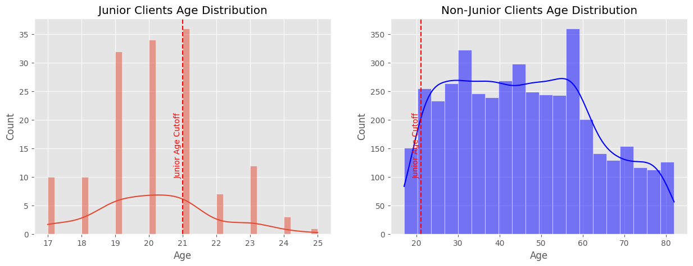
For the cutoff the age 21 was chosen (meaning non-card-holders that are younger than the threshold or exactly at the threshold) since we can see a rapid decrease in Junior Card Holders after the proposed age. These remaining customers above the cutoff age that still own a Junior card could just remain there due to the reason that the bank may need some time to reissue regular cards; Which is why no clear cutoff age can be found in the distribution.
underage_clients = client_df[(client_df['client_age'] <= JUNIOR_AGE_CUTOFF) & (~client_df['has_card'])]
client_df = client_df[~client_df['client_id'].isin(underage_clients['client_id'])]
print(f'Number of underage clients: {underage_clients.shape[0]}')
print(f'Number of clients remaining after underage client removal: {client_df.shape[0]}')Number of underage clients: 222
Number of clients remaining after underage client removal: 4133Model Construction
Processing Transactional Data
- The goal is to predict if a non-card-owner will buy a card or not
The first task is to look if every account in the transactions dataframe has a “first transaction”. This would make the calculation of the monthly balance much easier since everything can be summed up without having to worry that there were months without records in the transaction dataframe.
# Find the minimum (first) transaction(s) date for each account
min_dates = transaction.groupby('account_id')['date'].min().reset_index()
min_dates.rename(columns={'date': 'min_date'}, inplace=True)
# Merge the minimum date back to the transactions to identify all transactions on the first day
transactions_with_min_date = pd.merge(transaction, min_dates, on='account_id')
# Filter transactions that are on the first day
first_day_transactions = transactions_with_min_date[transactions_with_min_date['date'] == transactions_with_min_date['min_date']]
first_day_transactions = first_day_transactions.copy()
# Now, for each of these first day transactions, check if any have amount equals balance
first_day_transactions['amount_equals_balance'] = first_day_transactions['amount'] == first_day_transactions['balance']
# Group by account_id and check if any transactions for each account meet the condition
accounts_meeting_condition = first_day_transactions.groupby('account_id')['amount_equals_balance'].any().reset_index()
# Verify if all accounts have at least one transaction on the first day meeting the condition
all_accounts_covered = accounts_meeting_condition['amount_equals_balance'].all()
print("Does every account's first day of transactions include at least one transaction where amount equals balance?", all_accounts_covered)Does every account's first day of transactions include at least one transaction where amount equals balance? TrueNow every accounts balance needs to be calculated per month.
transaction['month'] = transaction['date'].dt.to_period('M')
transactions_monthly = transaction.groupby(['account_id', 'month']).agg(
volume=('amount', 'sum'),
credit=('amount', lambda x: x[x > 0].sum()),
withdrawal=('amount', lambda x: x[x < 0].sum()),
n_transactions=('amount', 'size')
).reset_index()transactions_monthly['month'] = pd.PeriodIndex(transactions_monthly['month'])
date_ranges = transactions_monthly.groupby('account_id')['month'].agg(['min', 'max'])
def reindex_df(group, account_id):
idx = pd.period_range(start=group['month'].min(), end=group['month'].max(), freq='M')
group.set_index('month', inplace=True)
group = group.reindex(idx, fill_value=0)
group.reset_index(inplace=True)
group.rename(columns={'index': 'month'}, inplace=True)
group['account_id'] = account_id
return group
transactions_monthly = (transactions_monthly.groupby('account_id')
.apply(lambda x: reindex_df(x, x.name))
.reset_index(level=0, drop=True))
# Calculate cumulative balance
transactions_monthly['balance'] = transactions_monthly.groupby('account_id')['volume'].cumsum()transactions_monthly| month | account_id | volume | credit | withdrawal | n_transactions | balance | |
|---|---|---|---|---|---|---|---|
| 0 | 1995-03 | 1 | 1000.0 | 1000.0 | 0.0 | 1 | 1000.0 |
| 1 | 1995-04 | 1 | 16298.2 | 16298.2 | 0.0 | 3 | 17298.2 |
| 2 | 1995-05 | 1 | 5858.0 | 5858.0 | 0.0 | 3 | 23156.2 |
| 3 | 1995-06 | 1 | 3979.6 | 3979.6 | 0.0 | 3 | 27135.8 |
| 4 | 1995-07 | 1 | 9087.9 | 9087.9 | 0.0 | 3 | 36223.7 |
| ... | ... | ... | ... | ... | ... | ... | ... |
| 36 | 1998-08 | 11382 | 54569.5 | 54569.5 | 0.0 | 7 | 2386853.6 |
| 37 | 1998-09 | 11382 | 44120.0 | 44120.0 | 0.0 | 5 | 2430973.6 |
| 38 | 1998-10 | 11382 | 63262.2 | 63262.2 | 0.0 | 6 | 2494235.8 |
| 39 | 1998-11 | 11382 | 50165.7 | 50165.7 | 0.0 | 5 | 2544401.5 |
| 40 | 1998-12 | 11382 | 78760.4 | 78760.4 | 0.0 | 5 | 2623161.9 |
179054 rows × 7 columns
Defining Roll-Up Windows of Transactions
Before we can continue to filter out customers that have at least 13 Months of transaction history it is also needed to give non-customers a fictional card_issued date so we can build negative samples that also contain a 13-Month rollup window.
clients_with_cards = client_df[~client_df['card_issued'].isnull()]
time_between_creation_and_issue = (clients_with_cards['card_issued'] - clients_with_cards['account_date']).dt.days
plt.figure(figsize=(10, 6))
sns.histplot(time_between_creation_and_issue, bins=50, stat='percent', kde=False, color='blue', linewidth=1)
plt.title('Distribution of Card Issuance Dates')
plt.xlabel('Days')
plt.ylabel('Percentage of Accounts')
plt.grid(True)
plt.show()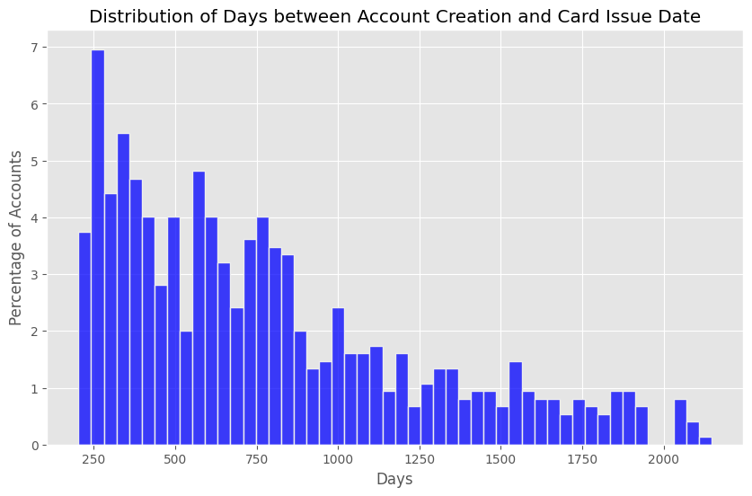
An observation we can make when looking at the distribution of when cards usually get issued after the account creation is that there don’t seem to be any issuances before day 200 of the account.
np.random.seed(1337)
sampled_deltas = np.random.choice(time_between_creation_and_issue, size=len(client_df[client_df['card_issued'].isnull()]))
plt.figure(figsize=(10, 6))
sns.histplot(sampled_deltas, bins=50, stat='percent', kde=False, color='blue', linewidth=1, label='Sampled Deltas')
sns.histplot(time_between_creation_and_issue, bins=50, stat='percent', kde=False, color='orange', linewidth=1, label='Original Deltas')
plt.title('Distribution of Card Issuance Dates')
plt.xlabel('Days')
plt.ylabel('Percentage of Accounts')
plt.legend()
plt.grid(True)
plt.show()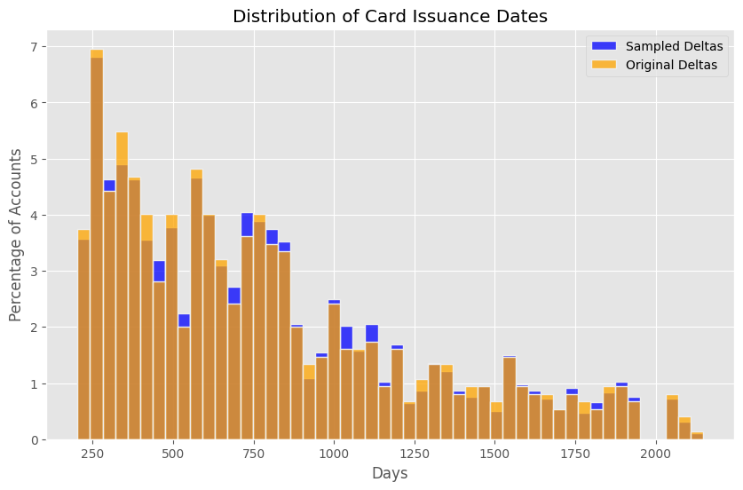
if len(client_df[client_df['card_issued'].isnull()]) > 0:
client_df.loc[client_df['card_issued'].isnull(), 'card_issued'] = client_df.loc[client_df['card_issued'].isnull(), 'account_date'] + pd.to_timedelta(sampled_deltas, unit='D')
print(f'Number of NaT/NaN values in card_issued: {client_df["card_issued"].isnull().sum()}')Number of NaT/NaN values in card_issued: 0card_issued = card.groupby('disp_id')['card_issued'].min().reset_index()
card_issued.head(5)| disp_id | card_issued | |
|---|---|---|
| 0 | 9 | 1998-10-16 |
| 1 | 19 | 1998-03-13 |
| 2 | 41 | 1995-09-03 |
| 3 | 42 | 1998-11-26 |
| 4 | 51 | 1995-04-24 |
client_df[client_df['disp_id'].isnull()].shape[0]
transactions_monthly.info()<class 'pandas.core.frame.DataFrame'>
Index: 179054 entries, 0 to 40
Data columns (total 7 columns):
# Column Non-Null Count Dtype
--- ------ -------------- -----
0 month 179054 non-null period[M]
1 account_id 179054 non-null int64
2 volume 179054 non-null float64
3 credit 179054 non-null float64
4 withdrawal 179054 non-null float64
5 n_transactions 179054 non-null int64
6 balance 179054 non-null float64
dtypes: float64(4), int64(2), period[M](1)
memory usage: 10.9 MBtransactions_monthly = transactions_monthly.merge(client_df[['account_id', 'card_issued']], left_on='account_id', right_on='account_id', how='left')
transactions_monthly.head()| month | account_id | volume | credit | withdrawal | n_transactions | balance | card_issued | |
|---|---|---|---|---|---|---|---|---|
| 0 | 1995-03 | 1 | 1000.0 | 1000.0 | 0.0 | 1 | 1000.0 | 1998-09-18 |
| 1 | 1995-04 | 1 | 16298.2 | 16298.2 | 0.0 | 3 | 17298.2 | 1998-09-18 |
| 2 | 1995-05 | 1 | 5858.0 | 5858.0 | 0.0 | 3 | 23156.2 | 1998-09-18 |
| 3 | 1995-06 | 1 | 3979.6 | 3979.6 | 0.0 | 3 | 27135.8 | 1998-09-18 |
| 4 | 1995-07 | 1 | 9087.9 | 9087.9 | 0.0 | 3 | 36223.7 | 1998-09-18 |
Now, let’s see if the join worked correctly and we don’t have any transactions without a card_issued date anymore.
assert transactions_monthly['card_issued'].isnull().sum() == 0Validating Negative Examples
The goal for our model will be to be able to learn from a base set of customers (with and without cards) that lived through the same economic circumstances. To validate that all customers in our current set are represented in a well distributed way, this next plot looks at the distribution of volume throughout the datasets timeframe.
transactions_monthly['has_card'] = transactions_monthly['account_id'].isin(client_df[client_df['has_card']]['account_id'])transactions_monthly.reset_index(inplace=True)
transactions_monthly['id'] = range(len(transactions_monthly))
transactions_monthly.set_index('id', inplace=True)transactions_with_cards = transactions_monthly[transactions_monthly['has_card'] == True]
transactions_without_cards = transactions_monthly[transactions_monthly['has_card'] == False]
grouped_with_cards = transactions_with_cards.groupby('month')['volume'].sum().reset_index()
grouped_without_cards = transactions_without_cards.groupby('month')['volume'].sum().reset_index()
grouped_with_cards['month'] = grouped_with_cards['month'].astype(str)
grouped_without_cards['month'] = grouped_without_cards['month'].astype(str)
grouped_with_cards['avg_volume_per_client'] = grouped_with_cards['volume'] / transactions_with_cards.shape[0]
grouped_without_cards['avg_volume_per_client'] = grouped_without_cards['volume'] / transactions_without_cards.shape[0]
plt.figure(figsize=(12, 6))
sns.lineplot(x='month', y='avg_volume_per_client', data=grouped_with_cards, marker='o', label='Clients with Cards')
sns.lineplot(x='month', y='avg_volume_per_client', data=grouped_without_cards, marker='o', label='Clients without Cards')
plt.title('Transaction Volume per Month')
plt.xlabel('Month')
plt.ylabel('Average Transaction Volume per Client ($)')
plt.legend()
plt.grid(True)
plt.xticks(ticks=grouped_with_cards['month'][grouped_with_cards['month'].str.endswith('-01')], rotation=45)
plt.gca().set_xticklabels([label[:4] for label in grouped_with_cards['month'][grouped_with_cards['month'].str.endswith('-01')]])
plt.show()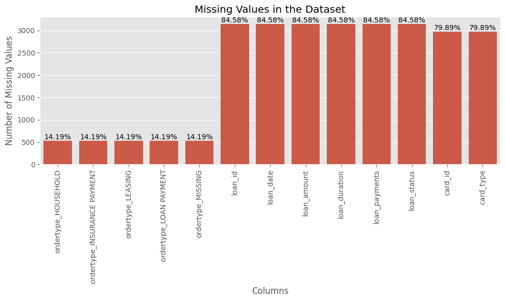
transactions_monthly['card_issued'] = pd.to_datetime(transactions_monthly['card_issued'])
transactions_monthly['card_issued_period'] = transactions_monthly['card_issued'].dt.to_period('M')
transactions_monthly['month_diff'] = transactions_monthly.apply(lambda row: (row['card_issued_period'] - row['month']).n if pd.notnull(row['card_issued_period']) and pd.notnull(row['month']) else None, axis=1)
filtered_transactions = transactions_monthly[transactions_monthly['month_diff'].between(1, 13)]transactions_monthly| index | month | account_id | volume | credit | withdrawal | n_transactions | balance | card_issued | has_card | card_issued_period | month_diff | |
|---|---|---|---|---|---|---|---|---|---|---|---|---|
| id | ||||||||||||
| 0 | 0 | 1995-03 | 1 | 1000.0 | 1000.0 | 0.0 | 1 | 1000.0 | 1998-09-18 | False | 1998-09 | 42 |
| 1 | 1 | 1995-04 | 1 | 16298.2 | 16298.2 | 0.0 | 3 | 17298.2 | 1998-09-18 | False | 1998-09 | 41 |
| 2 | 2 | 1995-05 | 1 | 5858.0 | 5858.0 | 0.0 | 3 | 23156.2 | 1998-09-18 | False | 1998-09 | 40 |
| 3 | 3 | 1995-06 | 1 | 3979.6 | 3979.6 | 0.0 | 3 | 27135.8 | 1998-09-18 | False | 1998-09 | 39 |
| 4 | 4 | 1995-07 | 1 | 9087.9 | 9087.9 | 0.0 | 3 | 36223.7 | 1998-09-18 | False | 1998-09 | 38 |
| ... | ... | ... | ... | ... | ... | ... | ... | ... | ... | ... | ... | ... |
| 179049 | 179049 | 1998-08 | 11382 | 54569.5 | 54569.5 | 0.0 | 7 | 2386853.6 | 1996-09-30 | False | 1996-09 | -23 |
| 179050 | 179050 | 1998-09 | 11382 | 44120.0 | 44120.0 | 0.0 | 5 | 2430973.6 | 1996-09-30 | False | 1996-09 | -24 |
| 179051 | 179051 | 1998-10 | 11382 | 63262.2 | 63262.2 | 0.0 | 6 | 2494235.8 | 1996-09-30 | False | 1996-09 | -25 |
| 179052 | 179052 | 1998-11 | 11382 | 50165.7 | 50165.7 | 0.0 | 5 | 2544401.5 | 1996-09-30 | False | 1996-09 | -26 |
| 179053 | 179053 | 1998-12 | 11382 | 78760.4 | 78760.4 | 0.0 | 5 | 2623161.9 | 1996-09-30 | False | 1996-09 | -27 |
179054 rows × 12 columns
filtered_transactions.sort_values(by=['account_id', 'month_diff'])| index | month | account_id | volume | credit | withdrawal | n_transactions | balance | card_issued | has_card | card_issued_period | month_diff | |
|---|---|---|---|---|---|---|---|---|---|---|---|---|
| id | ||||||||||||
| 41 | 41 | 1998-08 | 1 | 6492.7 | 6492.7 | 0.0 | 5 | 338855.2 | 1998-09-18 | False | 1998-09 | 1 |
| 40 | 40 | 1998-07 | 1 | 6221.0 | 6221.0 | 0.0 | 4 | 332362.5 | 1998-09-18 | False | 1998-09 | 2 |
| 39 | 39 | 1998-06 | 1 | 6667.1 | 6667.1 | 0.0 | 5 | 326141.5 | 1998-09-18 | False | 1998-09 | 3 |
| 38 | 38 | 1998-05 | 1 | 6212.3 | 6212.3 | 0.0 | 4 | 319474.4 | 1998-09-18 | False | 1998-09 | 4 |
| 37 | 37 | 1998-04 | 1 | 7435.5 | 7435.5 | 0.0 | 6 | 313262.1 | 1998-09-18 | False | 1998-09 | 5 |
| ... | ... | ... | ... | ... | ... | ... | ... | ... | ... | ... | ... | ... |
| 179017 | 179017 | 1995-12 | 11382 | 82563.6 | 82563.6 | 0.0 | 4 | 221665.9 | 1996-09-30 | False | 1996-09 | 9 |
| 179016 | 179016 | 1995-11 | 11382 | 51280.6 | 51280.6 | 0.0 | 4 | 139102.3 | 1996-09-30 | False | 1996-09 | 10 |
| 179015 | 179015 | 1995-10 | 11382 | 49912.3 | 49912.3 | 0.0 | 4 | 87821.7 | 1996-09-30 | False | 1996-09 | 11 |
| 179014 | 179014 | 1995-09 | 11382 | 37709.4 | 37709.4 | 0.0 | 4 | 37909.4 | 1996-09-30 | False | 1996-09 | 12 |
| 179013 | 179013 | 1995-08 | 11382 | 200.0 | 200.0 | 0.0 | 1 | 200.0 | 1996-09-30 | False | 1996-09 | 13 |
44962 rows × 12 columns
Pivoting the transactions
An issue at this point can be that an account may have months without any transactions, so there needs to be a more thorough process to interpolate the data: - Volume, Withdrawal, Credit and Number of Transactions: If there are missing months in these variables we can just set 0 as their value as there has not been any activity if there were no recorded months. - Balance: The balance will get recursively set to the last preceding recorded month. So if there are consecutive “missing” months in transactions the balance will always be set to the last recorded month.
account_summary = pd.DataFrame(filtered_transactions['account_id'].unique(), columns=['account_id'])
variables_to_pivot = ['volume', 'withdrawal', 'credit', 'n_transactions', 'balance']
for variable in variables_to_pivot:
grouped = filtered_transactions.groupby(['account_id', 'month_diff'])[variable].sum().reset_index()
pivot = grouped.pivot(index='account_id', columns='month_diff', values=variable).reset_index()
pivot.columns = ['account_id'] + [f'{variable}_month_diff_{int(col)}' if col != 'account_id' else 'account_id' for col in pivot.columns[1:]]
account_summary = pd.merge(account_summary, pivot, on='account_id', how='left')
for variable in ['volume', 'withdrawal', 'credit', 'n_transactions']:
account_summary.update(account_summary.filter(regex=f'^{variable}_').fillna(0))
def find_last_balance(account_id, starting_month_diff):
higher_month_diff = transactions_monthly[
(transactions_monthly['account_id'] == account_id) &
(transactions_monthly['month_diff'] >= starting_month_diff)
].sort_values('month_diff')
last_balance_row = higher_month_diff[higher_month_diff['balance'].notna()].head(1)
if not last_balance_row.empty:
return last_balance_row.iloc[0]['balance']
else:
return 0
balance_columns = [col for col in account_summary.columns if 'balance_month_diff_' in col]
for idx, row in account_summary.iterrows():
for col in balance_columns:
if pd.isna(row[col]):
month_diff = int(col.split('_')[-1])
last_balance = find_last_balance(row['account_id'], month_diff + 1)
account_summary.at[idx, col] = last_balanceaccount_summary.head()| account_id | volume_month_diff_1 | volume_month_diff_2 | volume_month_diff_3 | volume_month_diff_4 | volume_month_diff_5 | volume_month_diff_6 | volume_month_diff_7 | volume_month_diff_8 | volume_month_diff_9 | volume_month_diff_10 | volume_month_diff_11 | volume_month_diff_12 | volume_month_diff_13 | withdrawal_month_diff_1 | withdrawal_month_diff_2 | withdrawal_month_diff_3 | withdrawal_month_diff_4 | withdrawal_month_diff_5 | withdrawal_month_diff_6 | withdrawal_month_diff_7 | withdrawal_month_diff_8 | withdrawal_month_diff_9 | withdrawal_month_diff_10 | withdrawal_month_diff_11 | withdrawal_month_diff_12 | withdrawal_month_diff_13 | credit_month_diff_1 | credit_month_diff_2 | credit_month_diff_3 | credit_month_diff_4 | credit_month_diff_5 | credit_month_diff_6 | credit_month_diff_7 | credit_month_diff_8 | credit_month_diff_9 | credit_month_diff_10 | credit_month_diff_11 | credit_month_diff_12 | credit_month_diff_13 | n_transactions_month_diff_1 | n_transactions_month_diff_2 | n_transactions_month_diff_3 | n_transactions_month_diff_4 | n_transactions_month_diff_5 | n_transactions_month_diff_6 | n_transactions_month_diff_7 | n_transactions_month_diff_8 | n_transactions_month_diff_9 | n_transactions_month_diff_10 | n_transactions_month_diff_11 | n_transactions_month_diff_12 | n_transactions_month_diff_13 | balance_month_diff_1 | balance_month_diff_2 | balance_month_diff_3 | balance_month_diff_4 | balance_month_diff_5 | balance_month_diff_6 | balance_month_diff_7 | balance_month_diff_8 | balance_month_diff_9 | balance_month_diff_10 | balance_month_diff_11 | balance_month_diff_12 | balance_month_diff_13 | |
|---|---|---|---|---|---|---|---|---|---|---|---|---|---|---|---|---|---|---|---|---|---|---|---|---|---|---|---|---|---|---|---|---|---|---|---|---|---|---|---|---|---|---|---|---|---|---|---|---|---|---|---|---|---|---|---|---|---|---|---|---|---|---|---|---|---|---|
| 0 | 1 | 6492.7 | 6221.0 | 6667.1 | 6212.3 | 7435.5 | 7018.6 | 6701.9 | 9091.5 | 10907.2 | 7318.0 | 6218.0 | 6600.6 | 8282.7 | 0.0 | 0.0 | 0.0 | 0.0 | 0.0 | 0.0 | 0.0 | 0.0 | 0.0 | 0.0 | 0.0 | 0.0 | 0.0 | 6492.7 | 6221.0 | 6667.1 | 6212.3 | 7435.5 | 7018.6 | 6701.9 | 9091.5 | 10907.2 | 7318.0 | 6218.0 | 6600.6 | 8282.7 | 5.0 | 4.0 | 5.0 | 4.0 | 6.0 | 5.0 | 5.0 | 10.0 | 5.0 | 5.0 | 4.0 | 5.0 | 6.0 | 338855.2 | 332362.5 | 326141.5 | 319474.4 | 313262.1 | 305826.6 | 298808.0 | 292106.1 | 283014.6 | 272107.4 | 264789.4 | 258571.4 | 251970.8 |
| 1 | 2 | 34617.6 | 45943.4 | 52856.1 | 47098.6 | 52913.9 | 37980.7 | 31345.5 | 23949.5 | 1100.0 | 0.0 | 0.0 | 0.0 | 0.0 | 0.0 | 0.0 | 0.0 | 0.0 | 0.0 | 0.0 | 0.0 | 0.0 | 0.0 | 0.0 | 0.0 | 0.0 | 0.0 | 34617.6 | 45943.4 | 52856.1 | 47098.6 | 52913.9 | 37980.7 | 31345.5 | 23949.5 | 1100.0 | 0.0 | 0.0 | 0.0 | 0.0 | 6.0 | 7.0 | 7.0 | 6.0 | 3.0 | 3.0 | 3.0 | 3.0 | 1.0 | 0.0 | 0.0 | 0.0 | 0.0 | 327805.3 | 293187.7 | 247244.3 | 194388.2 | 147289.6 | 94375.7 | 56395.0 | 25049.5 | 1100.0 | 0.0 | 0.0 | 0.0 | 0.0 |
| 2 | 4 | 10917.6 | 12013.8 | 9011.7 | 14254.5 | 11343.0 | 9015.0 | 10769.2 | 9003.4 | 20249.4 | 13529.7 | 9040.6 | 9031.2 | 12329.5 | 0.0 | 0.0 | 0.0 | 0.0 | 0.0 | 0.0 | 0.0 | 0.0 | 0.0 | 0.0 | 0.0 | 0.0 | 0.0 | 10917.6 | 12013.8 | 9011.7 | 14254.5 | 11343.0 | 9015.0 | 10769.2 | 9003.4 | 20249.4 | 13529.7 | 9040.6 | 9031.2 | 12329.5 | 6.0 | 6.0 | 5.0 | 6.0 | 7.0 | 5.0 | 6.0 | 5.0 | 12.0 | 7.0 | 5.0 | 5.0 | 6.0 | 195475.7 | 184558.1 | 172544.3 | 163532.6 | 149278.1 | 137935.1 | 128920.1 | 118150.9 | 109147.5 | 88898.1 | 75368.4 | 66327.8 | 57296.6 |
| 3 | 5 | 8607.1 | 7797.2 | 15720.3 | 10825.1 | 7812.5 | 5035.1 | 5017.0 | 5017.0 | 5017.0 | 5017.0 | 600.0 | 0.0 | 0.0 | 0.0 | 0.0 | 0.0 | 0.0 | 0.0 | 0.0 | 0.0 | 0.0 | 0.0 | 0.0 | 0.0 | 0.0 | 0.0 | 8607.1 | 7797.2 | 15720.3 | 10825.1 | 7812.5 | 5035.1 | 5017.0 | 5017.0 | 5017.0 | 5017.0 | 600.0 | 0.0 | 0.0 | 5.0 | 4.0 | 10.0 | 6.0 | 4.0 | 3.0 | 1.0 | 1.0 | 1.0 | 1.0 | 1.0 | 0.0 | 0.0 | 76465.3 | 67858.2 | 60061.0 | 44340.7 | 33515.6 | 25703.1 | 20668.0 | 15651.0 | 10634.0 | 5617.0 | 600.0 | 0.0 | 0.0 |
| 4 | 6 | 14333.0 | 10810.0 | 10798.3 | 11989.9 | 20888.8 | 13055.1 | 10807.0 | 13039.2 | 10792.4 | 23857.9 | 11865.2 | 10815.6 | 10803.9 | 0.0 | 0.0 | 0.0 | 0.0 | 0.0 | 0.0 | 0.0 | 0.0 | 0.0 | 0.0 | 0.0 | 0.0 | 0.0 | 14333.0 | 10810.0 | 10798.3 | 11989.9 | 20888.8 | 13055.1 | 10807.0 | 13039.2 | 10792.4 | 23857.9 | 11865.2 | 10815.6 | 10803.9 | 5.0 | 4.0 | 4.0 | 5.0 | 6.0 | 5.0 | 4.0 | 5.0 | 4.0 | 11.0 | 6.0 | 4.0 | 4.0 | 625481.9 | 611148.9 | 600338.9 | 589540.6 | 577550.7 | 556661.9 | 543606.8 | 532799.8 | 519760.6 | 508968.2 | 485110.3 | 473245.1 | 462429.5 |
client_df = client_df.merge(account_summary, on='account_id', how='inner')Bringing the data together
n_lt_13_month_hist = transactions_monthly['account_id'].nunique()-filtered_transactions['account_id'].nunique()
preprocessing_summary = [
n_merged_base_client,
-len(junior_clients),
-n_lt_13_month_hist,
#-len(non_card_owners)+len(matched_non_buyers_df),
-len(client_df)
]
fig = go.Figure(go.Waterfall(
name = "20", orientation = "v",
measure = ["absolute", "relative", "relative", "relative", "total"],
x = ["Base Client List", "Junior Clients", "Clients with less than 13 Months of Transaction History", "Non-Card-Holders that were not matched on account activity", "Remaining Clients"],
textposition = "outside",
y = preprocessing_summary,
text = [str(x) for x in preprocessing_summary],
connector = {"line":{"color":"rgb(63, 63, 63)"}},
))
fig.update_layout(
title = "Profit and loss statement 2018",
showlegend = True
)
fig.show()Unable to display output for mime type(s): application/vnd.plotly.v1+jsonExploratory Data Analysis
Exploring Missing Values
missing_values = client_df.isnull().sum()
missing_values = pd.DataFrame({
'Number of Missing Values': missing_values[missing_values > 0],
'Percentage of Missing Values': [
f"{x:.2f}%" for x in (missing_values[missing_values > 0] / client_df.shape[0] * 100).round(2)
]
}, columns=['Number of Missing Values', 'Percentage of Missing Values'])
fig = go.Figure()
fig.add_trace(go.Bar(
x=missing_values.index,
y=missing_values['Number of Missing Values'],
text=missing_values['Percentage of Missing Values'],
textposition='auto'
))
fig.update_layout(
title='Missing Values in the Dataset',
xaxis_title='Columns',
yaxis_title='Number of Missing Values'
)
fig.show()Unable to display output for mime type(s): application/vnd.plotly.v1+jsonCardholders vs Non-Cardholders
card_owners = client_df[client_df['has_card']]
non_card_owners = client_df[~client_df['has_card']]data = {
'Card Ownership': ['Card Owners', 'Non-Card Owners'],
'Number of Clients': [card_owners.shape[0], non_card_owners.shape[0]]
}
plt.figure(figsize=(10, 6))
sns.barplot(x='Card Ownership', y='Number of Clients', data=data, palette='viridis', hue='Card Ownership')
for index, value in enumerate(data['Number of Clients']):
plt.text(index, value, str(value), ha='center', va='bottom')
plt.title('Card Owners vs Non-Card Owners')
plt.xlabel('Card Ownership')
plt.ylabel('Number of Clients')
plt.grid(True)
plt.show()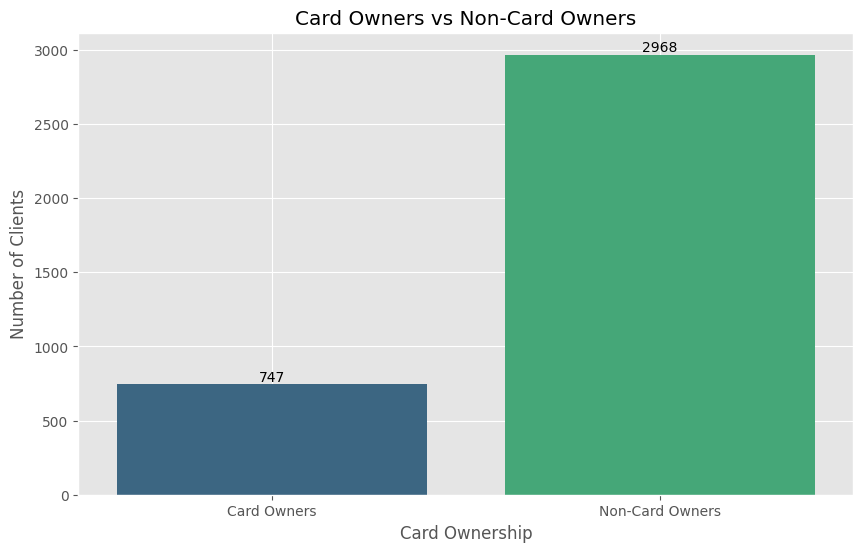
Card Types
card_types = card_owners['card_type'].value_counts()
card_types = card_types.reset_index()
card_types.columns = ['Card Type', 'Number of Clients']
plt.figure(figsize=(10, 6))
sns.barplot(x='Card Type', y='Number of Clients', data=card_types, palette='viridis', hue='Card Type')
for index, value in enumerate(card_types['Number of Clients']):
plt.text(index, value, str(value), ha='center', va='bottom')
plt.title('Card Types of Card Owners')
plt.xlabel('Card Type')
plt.ylabel('Number of Clients')
plt.grid(True)
plt.show()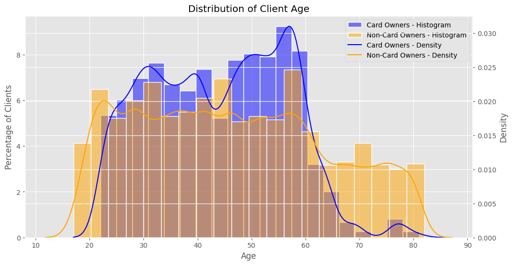
Volume before card purchase
classic_card_type_df = card_owners[card_owners['card_type'] == 'classic']
gold_card_type_df = card_owners[card_owners['card_type'] == 'gold']
volume_month_diff_columns = [col for col in account_summary.columns if 'volume_month_diff_' in col]
classic_data = []
gold_data = []
for col in volume_month_diff_columns:
month_num = col.split('_')[-1]
for value in classic_card_type_df[col]:
classic_data.append({'Month': month_num, 'Volume': value, 'Card Type': 'Classic'})
for col in volume_month_diff_columns:
month_num = col.split('_')[-1]
for value in gold_card_type_df[col]:
gold_data.append({'Month': month_num, 'Volume': value, 'Card Type': 'Gold'})
combined_data = classic_data + gold_data
combined_df = pd.DataFrame(combined_data)
fig, axes = plt.subplots(nrows=2, ncols=1, figsize=(12, 14), sharex=True)
sns.boxplot(ax=axes[0], x='Month', y='Volume', data=combined_df[combined_df['Card Type'] == 'Classic'], palette='viridis', hue='Month')
axes[0].set_title('Volume of Transactions for Classic Card Holders')
axes[0].set_xlabel('Months before purchase')
axes[0].set_ylabel('Volume of Transactions')
sns.boxplot(ax=axes[1], x='Month', y='Volume', data=combined_df[combined_df['Card Type'] == 'Gold'], palette='viridis', hue='Month')
axes[1].set_title('Volume of Transactions for Gold Card Holders')
axes[1].set_xlabel('Months before purchase')
axes[1].set_ylabel('Volume of Transactions')
fig.suptitle('Volume of Transactions by Card Type')
plt.tight_layout(rect=[0, 0, 1, 0.97])
plt.show()
Age distribution
fig, ax1 = plt.subplots(figsize=(12, 6))
# Plot histograms with percentage normalization on the left y-axis
sns.histplot(card_owners['client_age'], bins=20, stat='percent', kde=False, color='blue', edgecolor='white', linewidth=1, label='Card Owners - Histogram', alpha=0.5, ax=ax1)
sns.histplot(non_card_owners['client_age'], bins=20, stat='percent', kde=False, color='orange', edgecolor='white', linewidth=1, label='Non-Card Owners - Histogram', alpha=0.5, ax=ax1)
# Set up the second y-axis
ax2 = ax1.twinx()
# Plot density plots on the right y-axis
sns.kdeplot(card_owners['client_age'], bw_adjust=0.5, color='blue', label='Card Owners - Density', ax=ax2)
sns.kdeplot(non_card_owners['client_age'], bw_adjust=0.5, color='orange', label='Non-Card Owners - Density', ax=ax2)
# Set the titles and labels
ax1.set_title('Distribution of Client Age')
ax1.set_xlabel('Age')
ax1.set_ylabel('Percentage of Clients')
ax2.set_ylabel('Density')
# Combine legends
handles1, labels1 = ax1.get_legend_handles_labels()
handles2, labels2 = ax2.get_legend_handles_labels()
ax1.legend(handles1 + handles2, labels1 + labels2, loc='upper right')
# Show the plot
plt.grid(True)
plt.show()
Feature Engineering
Demographic-Based Features
- Defining Age Groups The
pd.cut()function bins continuous data into discrete intervals based on specified edges, with the default behavior including the left edge and excluding the right edge of each interval. The ages get binned by assigning each age value to an interval defined by specified edges, such as [0, 20), [20, 30), and so on, where each interval includes the left edge and excludes the right edge by default.
age_brackets = [0, 20, 30, 40, 50, 60, 70, 100]
plt.figure(figsize=(12, 6))
sns.histplot(card_owners['client_age'], bins=age_brackets, stat='percent', kde=False, color='blue', edgecolor='white', linewidth=1, label='Card Owners', alpha=0.5)
sns.histplot(non_card_owners['client_age'], bins=age_brackets, stat='percent', kde=False, color='orange', edgecolor='white', linewidth=1, label='Non-Card Owners', alpha=0.5)
for age_bracket in age_brackets:
plt.axvline(age_bracket, color='black', linestyle='--', linewidth=1)
plt.title('Age Distribution of Card Owners and Non-Card Owners')
plt.xlabel('Age')
plt.ylabel('Percentage of Clients')
for i in range(len(age_brackets) - 1):
plt.text(age_brackets[i] + 3, 5, f'{age_brackets[i]}-{age_brackets[i+1]-1}', fontsize=8, color='black')
plt.legend()
plt.grid(True)
plt.show()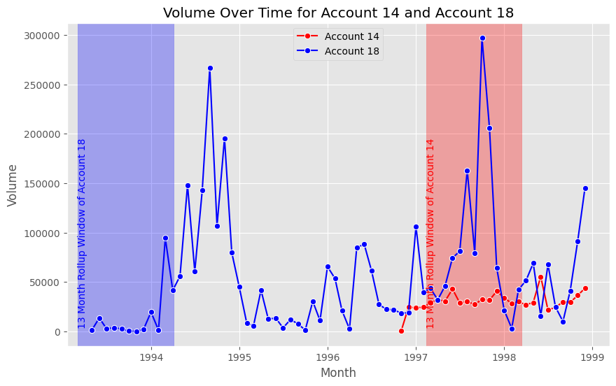
client_df['age_bracket'] = pd.cut(client_df['client_age'], bins=age_brackets, right=False)
age_bracket_counts = client_df['age_bracket'].value_counts().reset_index()
age_bracket_counts.columns = ['Age Bracket', 'Number of Clients']
age_bracket_counts| Age Bracket | Number of Clients | |
|---|---|---|
| 0 | [50, 60) | 788 |
| 1 | [40, 50) | 748 |
| 2 | [20, 30) | 741 |
| 3 | [30, 40) | 735 |
| 4 | [60, 70) | 447 |
| 5 | [70, 100) | 409 |
| 6 | [0, 20) | 77 |
- Age at Loan
client_df['client_age_at_loan'] = (pd.to_datetime(client_df['loan_date']) - pd.to_datetime(client_df['client_birth_date'])).dt.days // 365
client_df.head(5)| disp_id | client_id | account_id | account_district_id | account_frequency | account_date | client_district_id | client_gender | client_birth_date | client_age | ordertype_HOUSEHOLD | ordertype_INSURANCE PAYMENT | ordertype_LEASING | ordertype_LOAN PAYMENT | ordertype_MISSING | loan_id | loan_date | loan_amount | loan_duration | loan_payments | loan_status | card_id | card_type | card_issued | district_id_x | client_district_district_name | client_district_region | client_district_population | client_district_n_municipalities_with_inhabitants_lt_499 | client_district_n_municipalities_with_inhabitants_500_to_1999 | client_district_n_municipalities_with_inhabitants_2000_to_9999 | client_district_n_municipalities_with_inhabitants_gt_10000 | client_district_n_cities | client_district_ratio_urban_inhabitants | client_district_average_salary | client_district_unemployment_rate_95 | client_district_unemployment_rate_96 | client_district_enterpreneurs_per_1000_inhabitants | client_district_n_commited_crimes_95 | client_district_n_commited_crimes_96 | district_id_y | account_district_district_name | account_district_region | account_district_population | account_district_n_municipalities_with_inhabitants_lt_499 | account_district_n_municipalities_with_inhabitants_500_to_1999 | account_district_n_municipalities_with_inhabitants_2000_to_9999 | account_district_n_municipalities_with_inhabitants_gt_10000 | account_district_n_cities | account_district_ratio_urban_inhabitants | account_district_average_salary | account_district_unemployment_rate_95 | account_district_unemployment_rate_96 | account_district_enterpreneurs_per_1000_inhabitants | account_district_n_commited_crimes_95 | account_district_n_commited_crimes_96 | has_card | volume_month_diff_1 | volume_month_diff_2 | volume_month_diff_3 | volume_month_diff_4 | volume_month_diff_5 | volume_month_diff_6 | volume_month_diff_7 | volume_month_diff_8 | volume_month_diff_9 | volume_month_diff_10 | volume_month_diff_11 | volume_month_diff_12 | volume_month_diff_13 | withdrawal_month_diff_1 | withdrawal_month_diff_2 | withdrawal_month_diff_3 | withdrawal_month_diff_4 | withdrawal_month_diff_5 | withdrawal_month_diff_6 | withdrawal_month_diff_7 | withdrawal_month_diff_8 | withdrawal_month_diff_9 | withdrawal_month_diff_10 | withdrawal_month_diff_11 | withdrawal_month_diff_12 | withdrawal_month_diff_13 | credit_month_diff_1 | credit_month_diff_2 | credit_month_diff_3 | credit_month_diff_4 | credit_month_diff_5 | credit_month_diff_6 | credit_month_diff_7 | credit_month_diff_8 | credit_month_diff_9 | credit_month_diff_10 | credit_month_diff_11 | credit_month_diff_12 | credit_month_diff_13 | n_transactions_month_diff_1 | n_transactions_month_diff_2 | n_transactions_month_diff_3 | n_transactions_month_diff_4 | n_transactions_month_diff_5 | n_transactions_month_diff_6 | n_transactions_month_diff_7 | n_transactions_month_diff_8 | n_transactions_month_diff_9 | n_transactions_month_diff_10 | n_transactions_month_diff_11 | n_transactions_month_diff_12 | n_transactions_month_diff_13 | balance_month_diff_1 | balance_month_diff_2 | balance_month_diff_3 | balance_month_diff_4 | balance_month_diff_5 | balance_month_diff_6 | balance_month_diff_7 | balance_month_diff_8 | balance_month_diff_9 | balance_month_diff_10 | balance_month_diff_11 | balance_month_diff_12 | balance_month_diff_13 | age_bracket | client_age_at_loan | |
|---|---|---|---|---|---|---|---|---|---|---|---|---|---|---|---|---|---|---|---|---|---|---|---|---|---|---|---|---|---|---|---|---|---|---|---|---|---|---|---|---|---|---|---|---|---|---|---|---|---|---|---|---|---|---|---|---|---|---|---|---|---|---|---|---|---|---|---|---|---|---|---|---|---|---|---|---|---|---|---|---|---|---|---|---|---|---|---|---|---|---|---|---|---|---|---|---|---|---|---|---|---|---|---|---|---|---|---|---|---|---|---|---|---|---|---|---|---|---|---|---|---|---|---|---|
| 0 | 1 | 1 | 1 | 18 | MONTHLY CHARGES | 1995-03-24 | 18 | FEMALE | 1970-12-13 | 29 | 1.0 | 0.0 | 0.0 | 0.0 | 0.0 | NaN | NaT | NaN | NaN | NaN | NaN | NaN | NaN | 1998-09-18 | 18 | Pisek | south Bohemia | 70699 | 60 | 13 | 2 | 1 | 4 | 65.3 | 8968 | 2.83 | 3.35 | 131 | 1740 | 1910 | 18 | Pisek | south Bohemia | 70699 | 60 | 13 | 2 | 1 | 4 | 65.3 | 8968 | 2.83 | 3.35 | 131 | 1740 | 1910 | False | 6492.7 | 6221.0 | 6667.1 | 6212.3 | 7435.5 | 7018.6 | 6701.9 | 9091.5 | 10907.2 | 7318.0 | 6218.0 | 6600.6 | 8282.7 | 0.0 | 0.0 | 0.0 | 0.0 | 0.0 | 0.0 | 0.0 | 0.0 | 0.0 | 0.0 | 0.0 | 0.0 | 0.0 | 6492.7 | 6221.0 | 6667.1 | 6212.3 | 7435.5 | 7018.6 | 6701.9 | 9091.5 | 10907.2 | 7318.0 | 6218.0 | 6600.6 | 8282.7 | 5.0 | 4.0 | 5.0 | 4.0 | 6.0 | 5.0 | 5.0 | 10.0 | 5.0 | 5.0 | 4.0 | 5.0 | 6.0 | 338855.2 | 332362.5 | 326141.5 | 319474.4 | 313262.1 | 305826.6 | 298808.0 | 292106.1 | 283014.6 | 272107.4 | 264789.4 | 258571.4 | 251970.8 | [20, 30) | NaN |
| 1 | 2 | 2 | 2 | 1 | MONTHLY CHARGES | 1993-02-26 | 1 | MALE | 1945-02-04 | 54 | 1.0 | 0.0 | 0.0 | 1.0 | 0.0 | 4959.0 | 1994-01-05 | 80952.0 | 24.0 | 3373.0 | contract finished, no problems | NaN | NaN | 1993-11-29 | 1 | Hl.m. Praha | Prague | 1204953 | 0 | 0 | 0 | 1 | 1 | 100.0 | 12541 | 0.29 | 0.43 | 167 | 85677 | 99107 | 1 | Hl.m. Praha | Prague | 1204953 | 0 | 0 | 0 | 1 | 1 | 100.0 | 12541 | 0.29 | 0.43 | 167 | 85677 | 99107 | False | 34617.6 | 45943.4 | 52856.1 | 47098.6 | 52913.9 | 37980.7 | 31345.5 | 23949.5 | 1100.0 | 0.0 | 0.0 | 0.0 | 0.0 | 0.0 | 0.0 | 0.0 | 0.0 | 0.0 | 0.0 | 0.0 | 0.0 | 0.0 | 0.0 | 0.0 | 0.0 | 0.0 | 34617.6 | 45943.4 | 52856.1 | 47098.6 | 52913.9 | 37980.7 | 31345.5 | 23949.5 | 1100.0 | 0.0 | 0.0 | 0.0 | 0.0 | 6.0 | 7.0 | 7.0 | 6.0 | 3.0 | 3.0 | 3.0 | 3.0 | 1.0 | 0.0 | 0.0 | 0.0 | 0.0 | 327805.3 | 293187.7 | 247244.3 | 194388.2 | 147289.6 | 94375.7 | 56395.0 | 25049.5 | 1100.0 | 0.0 | 0.0 | 0.0 | 0.0 | [50, 60) | 48.0 |
| 2 | 6 | 6 | 4 | 12 | MONTHLY CHARGES | 1996-02-21 | 12 | MALE | 1919-09-22 | 80 | 2.0 | 0.0 | 0.0 | 0.0 | 0.0 | NaN | NaT | NaN | NaN | NaN | NaN | NaN | NaN | 1997-10-26 | 12 | Pribram | central Bohemia | 107870 | 84 | 29 | 6 | 1 | 6 | 58.0 | 8754 | 3.83 | 4.31 | 137 | 3804 | 3868 | 12 | Pribram | central Bohemia | 107870 | 84 | 29 | 6 | 1 | 6 | 58.0 | 8754 | 3.83 | 4.31 | 137 | 3804 | 3868 | False | 10917.6 | 12013.8 | 9011.7 | 14254.5 | 11343.0 | 9015.0 | 10769.2 | 9003.4 | 20249.4 | 13529.7 | 9040.6 | 9031.2 | 12329.5 | 0.0 | 0.0 | 0.0 | 0.0 | 0.0 | 0.0 | 0.0 | 0.0 | 0.0 | 0.0 | 0.0 | 0.0 | 0.0 | 10917.6 | 12013.8 | 9011.7 | 14254.5 | 11343.0 | 9015.0 | 10769.2 | 9003.4 | 20249.4 | 13529.7 | 9040.6 | 9031.2 | 12329.5 | 6.0 | 6.0 | 5.0 | 6.0 | 7.0 | 5.0 | 6.0 | 5.0 | 12.0 | 7.0 | 5.0 | 5.0 | 6.0 | 195475.7 | 184558.1 | 172544.3 | 163532.6 | 149278.1 | 137935.1 | 128920.1 | 118150.9 | 109147.5 | 88898.1 | 75368.4 | 66327.8 | 57296.6 | [70, 100) | NaN |
| 3 | 7 | 7 | 5 | 15 | MONTHLY CHARGES | 1997-05-30 | 15 | MALE | 1929-01-25 | 70 | 1.0 | 0.0 | 0.0 | 0.0 | 0.0 | NaN | NaT | NaN | NaN | NaN | NaN | NaN | NaN | 1998-04-27 | 15 | Cesky Krumlov | south Bohemia | 58796 | 22 | 16 | 7 | 1 | 5 | 51.9 | 9045 | 3.13 | 3.60 | 124 | 1845 | 1879 | 15 | Cesky Krumlov | south Bohemia | 58796 | 22 | 16 | 7 | 1 | 5 | 51.9 | 9045 | 3.13 | 3.60 | 124 | 1845 | 1879 | False | 8607.1 | 7797.2 | 15720.3 | 10825.1 | 7812.5 | 5035.1 | 5017.0 | 5017.0 | 5017.0 | 5017.0 | 600.0 | 0.0 | 0.0 | 0.0 | 0.0 | 0.0 | 0.0 | 0.0 | 0.0 | 0.0 | 0.0 | 0.0 | 0.0 | 0.0 | 0.0 | 0.0 | 8607.1 | 7797.2 | 15720.3 | 10825.1 | 7812.5 | 5035.1 | 5017.0 | 5017.0 | 5017.0 | 5017.0 | 600.0 | 0.0 | 0.0 | 5.0 | 4.0 | 10.0 | 6.0 | 4.0 | 3.0 | 1.0 | 1.0 | 1.0 | 1.0 | 1.0 | 0.0 | 0.0 | 76465.3 | 67858.2 | 60061.0 | 44340.7 | 33515.6 | 25703.1 | 20668.0 | 15651.0 | 10634.0 | 5617.0 | 600.0 | 0.0 | 0.0 | [70, 100) | NaN |
| 4 | 8 | 8 | 6 | 51 | MONTHLY CHARGES | 1994-09-27 | 51 | FEMALE | 1938-02-21 | 61 | 1.0 | 0.0 | 0.0 | 0.0 | 0.0 | NaN | NaT | NaN | NaN | NaN | NaN | NaN | NaN | 1998-11-27 | 51 | Trutnov | east Bohemia | 121947 | 37 | 28 | 7 | 3 | 11 | 70.5 | 8541 | 2.51 | 2.97 | 131 | 3496 | 3839 | 51 | Trutnov | east Bohemia | 121947 | 37 | 28 | 7 | 3 | 11 | 70.5 | 8541 | 2.51 | 2.97 | 131 | 3496 | 3839 | False | 14333.0 | 10810.0 | 10798.3 | 11989.9 | 20888.8 | 13055.1 | 10807.0 | 13039.2 | 10792.4 | 23857.9 | 11865.2 | 10815.6 | 10803.9 | 0.0 | 0.0 | 0.0 | 0.0 | 0.0 | 0.0 | 0.0 | 0.0 | 0.0 | 0.0 | 0.0 | 0.0 | 0.0 | 14333.0 | 10810.0 | 10798.3 | 11989.9 | 20888.8 | 13055.1 | 10807.0 | 13039.2 | 10792.4 | 23857.9 | 11865.2 | 10815.6 | 10803.9 | 5.0 | 4.0 | 4.0 | 5.0 | 6.0 | 5.0 | 4.0 | 5.0 | 4.0 | 11.0 | 6.0 | 4.0 | 4.0 | 625481.9 | 611148.9 | 600338.9 | 589540.6 | 577550.7 | 556661.9 | 543606.8 | 532799.8 | 519760.6 | 508968.2 | 485110.3 | 473245.1 | 462429.5 | [60, 70) | NaN |
Temporal Features
Account age
client_df['account_age'] = (pd.to_datetime('2000-01-01') - pd.to_datetime(client_df['account_date'])).dt.days // 365
client_df.head(5)| disp_id | client_id | account_id | account_district_id | account_frequency | account_date | client_district_id | client_gender | client_birth_date | client_age | ordertype_HOUSEHOLD | ordertype_INSURANCE PAYMENT | ordertype_LEASING | ordertype_LOAN PAYMENT | ordertype_MISSING | loan_id | loan_date | loan_amount | loan_duration | loan_payments | loan_status | card_id | card_type | card_issued | district_id_x | client_district_district_name | client_district_region | client_district_population | client_district_n_municipalities_with_inhabitants_lt_499 | client_district_n_municipalities_with_inhabitants_500_to_1999 | client_district_n_municipalities_with_inhabitants_2000_to_9999 | client_district_n_municipalities_with_inhabitants_gt_10000 | client_district_n_cities | client_district_ratio_urban_inhabitants | client_district_average_salary | client_district_unemployment_rate_95 | client_district_unemployment_rate_96 | client_district_enterpreneurs_per_1000_inhabitants | client_district_n_commited_crimes_95 | client_district_n_commited_crimes_96 | district_id_y | account_district_district_name | account_district_region | account_district_population | account_district_n_municipalities_with_inhabitants_lt_499 | account_district_n_municipalities_with_inhabitants_500_to_1999 | account_district_n_municipalities_with_inhabitants_2000_to_9999 | account_district_n_municipalities_with_inhabitants_gt_10000 | account_district_n_cities | account_district_ratio_urban_inhabitants | account_district_average_salary | account_district_unemployment_rate_95 | account_district_unemployment_rate_96 | account_district_enterpreneurs_per_1000_inhabitants | account_district_n_commited_crimes_95 | account_district_n_commited_crimes_96 | has_card | volume_month_diff_1 | volume_month_diff_2 | volume_month_diff_3 | volume_month_diff_4 | volume_month_diff_5 | volume_month_diff_6 | volume_month_diff_7 | volume_month_diff_8 | volume_month_diff_9 | volume_month_diff_10 | volume_month_diff_11 | volume_month_diff_12 | volume_month_diff_13 | withdrawal_month_diff_1 | withdrawal_month_diff_2 | withdrawal_month_diff_3 | withdrawal_month_diff_4 | withdrawal_month_diff_5 | withdrawal_month_diff_6 | withdrawal_month_diff_7 | withdrawal_month_diff_8 | withdrawal_month_diff_9 | withdrawal_month_diff_10 | withdrawal_month_diff_11 | withdrawal_month_diff_12 | withdrawal_month_diff_13 | credit_month_diff_1 | credit_month_diff_2 | credit_month_diff_3 | credit_month_diff_4 | credit_month_diff_5 | credit_month_diff_6 | credit_month_diff_7 | credit_month_diff_8 | credit_month_diff_9 | credit_month_diff_10 | credit_month_diff_11 | credit_month_diff_12 | credit_month_diff_13 | n_transactions_month_diff_1 | n_transactions_month_diff_2 | n_transactions_month_diff_3 | n_transactions_month_diff_4 | n_transactions_month_diff_5 | n_transactions_month_diff_6 | n_transactions_month_diff_7 | n_transactions_month_diff_8 | n_transactions_month_diff_9 | n_transactions_month_diff_10 | n_transactions_month_diff_11 | n_transactions_month_diff_12 | n_transactions_month_diff_13 | balance_month_diff_1 | balance_month_diff_2 | balance_month_diff_3 | balance_month_diff_4 | balance_month_diff_5 | balance_month_diff_6 | balance_month_diff_7 | balance_month_diff_8 | balance_month_diff_9 | balance_month_diff_10 | balance_month_diff_11 | balance_month_diff_12 | balance_month_diff_13 | age_bracket | client_age_at_loan | account_age | |
|---|---|---|---|---|---|---|---|---|---|---|---|---|---|---|---|---|---|---|---|---|---|---|---|---|---|---|---|---|---|---|---|---|---|---|---|---|---|---|---|---|---|---|---|---|---|---|---|---|---|---|---|---|---|---|---|---|---|---|---|---|---|---|---|---|---|---|---|---|---|---|---|---|---|---|---|---|---|---|---|---|---|---|---|---|---|---|---|---|---|---|---|---|---|---|---|---|---|---|---|---|---|---|---|---|---|---|---|---|---|---|---|---|---|---|---|---|---|---|---|---|---|---|---|---|---|
| 0 | 1 | 1 | 1 | 18 | MONTHLY CHARGES | 1995-03-24 | 18 | FEMALE | 1970-12-13 | 29 | 1.0 | 0.0 | 0.0 | 0.0 | 0.0 | NaN | NaT | NaN | NaN | NaN | NaN | NaN | NaN | 1998-09-18 | 18 | Pisek | south Bohemia | 70699 | 60 | 13 | 2 | 1 | 4 | 65.3 | 8968 | 2.83 | 3.35 | 131 | 1740 | 1910 | 18 | Pisek | south Bohemia | 70699 | 60 | 13 | 2 | 1 | 4 | 65.3 | 8968 | 2.83 | 3.35 | 131 | 1740 | 1910 | False | 6492.7 | 6221.0 | 6667.1 | 6212.3 | 7435.5 | 7018.6 | 6701.9 | 9091.5 | 10907.2 | 7318.0 | 6218.0 | 6600.6 | 8282.7 | 0.0 | 0.0 | 0.0 | 0.0 | 0.0 | 0.0 | 0.0 | 0.0 | 0.0 | 0.0 | 0.0 | 0.0 | 0.0 | 6492.7 | 6221.0 | 6667.1 | 6212.3 | 7435.5 | 7018.6 | 6701.9 | 9091.5 | 10907.2 | 7318.0 | 6218.0 | 6600.6 | 8282.7 | 5.0 | 4.0 | 5.0 | 4.0 | 6.0 | 5.0 | 5.0 | 10.0 | 5.0 | 5.0 | 4.0 | 5.0 | 6.0 | 338855.2 | 332362.5 | 326141.5 | 319474.4 | 313262.1 | 305826.6 | 298808.0 | 292106.1 | 283014.6 | 272107.4 | 264789.4 | 258571.4 | 251970.8 | [20, 30) | NaN | 4 |
| 1 | 2 | 2 | 2 | 1 | MONTHLY CHARGES | 1993-02-26 | 1 | MALE | 1945-02-04 | 54 | 1.0 | 0.0 | 0.0 | 1.0 | 0.0 | 4959.0 | 1994-01-05 | 80952.0 | 24.0 | 3373.0 | contract finished, no problems | NaN | NaN | 1993-11-29 | 1 | Hl.m. Praha | Prague | 1204953 | 0 | 0 | 0 | 1 | 1 | 100.0 | 12541 | 0.29 | 0.43 | 167 | 85677 | 99107 | 1 | Hl.m. Praha | Prague | 1204953 | 0 | 0 | 0 | 1 | 1 | 100.0 | 12541 | 0.29 | 0.43 | 167 | 85677 | 99107 | False | 34617.6 | 45943.4 | 52856.1 | 47098.6 | 52913.9 | 37980.7 | 31345.5 | 23949.5 | 1100.0 | 0.0 | 0.0 | 0.0 | 0.0 | 0.0 | 0.0 | 0.0 | 0.0 | 0.0 | 0.0 | 0.0 | 0.0 | 0.0 | 0.0 | 0.0 | 0.0 | 0.0 | 34617.6 | 45943.4 | 52856.1 | 47098.6 | 52913.9 | 37980.7 | 31345.5 | 23949.5 | 1100.0 | 0.0 | 0.0 | 0.0 | 0.0 | 6.0 | 7.0 | 7.0 | 6.0 | 3.0 | 3.0 | 3.0 | 3.0 | 1.0 | 0.0 | 0.0 | 0.0 | 0.0 | 327805.3 | 293187.7 | 247244.3 | 194388.2 | 147289.6 | 94375.7 | 56395.0 | 25049.5 | 1100.0 | 0.0 | 0.0 | 0.0 | 0.0 | [50, 60) | 48.0 | 6 |
| 2 | 6 | 6 | 4 | 12 | MONTHLY CHARGES | 1996-02-21 | 12 | MALE | 1919-09-22 | 80 | 2.0 | 0.0 | 0.0 | 0.0 | 0.0 | NaN | NaT | NaN | NaN | NaN | NaN | NaN | NaN | 1997-10-26 | 12 | Pribram | central Bohemia | 107870 | 84 | 29 | 6 | 1 | 6 | 58.0 | 8754 | 3.83 | 4.31 | 137 | 3804 | 3868 | 12 | Pribram | central Bohemia | 107870 | 84 | 29 | 6 | 1 | 6 | 58.0 | 8754 | 3.83 | 4.31 | 137 | 3804 | 3868 | False | 10917.6 | 12013.8 | 9011.7 | 14254.5 | 11343.0 | 9015.0 | 10769.2 | 9003.4 | 20249.4 | 13529.7 | 9040.6 | 9031.2 | 12329.5 | 0.0 | 0.0 | 0.0 | 0.0 | 0.0 | 0.0 | 0.0 | 0.0 | 0.0 | 0.0 | 0.0 | 0.0 | 0.0 | 10917.6 | 12013.8 | 9011.7 | 14254.5 | 11343.0 | 9015.0 | 10769.2 | 9003.4 | 20249.4 | 13529.7 | 9040.6 | 9031.2 | 12329.5 | 6.0 | 6.0 | 5.0 | 6.0 | 7.0 | 5.0 | 6.0 | 5.0 | 12.0 | 7.0 | 5.0 | 5.0 | 6.0 | 195475.7 | 184558.1 | 172544.3 | 163532.6 | 149278.1 | 137935.1 | 128920.1 | 118150.9 | 109147.5 | 88898.1 | 75368.4 | 66327.8 | 57296.6 | [70, 100) | NaN | 3 |
| 3 | 7 | 7 | 5 | 15 | MONTHLY CHARGES | 1997-05-30 | 15 | MALE | 1929-01-25 | 70 | 1.0 | 0.0 | 0.0 | 0.0 | 0.0 | NaN | NaT | NaN | NaN | NaN | NaN | NaN | NaN | 1998-04-27 | 15 | Cesky Krumlov | south Bohemia | 58796 | 22 | 16 | 7 | 1 | 5 | 51.9 | 9045 | 3.13 | 3.60 | 124 | 1845 | 1879 | 15 | Cesky Krumlov | south Bohemia | 58796 | 22 | 16 | 7 | 1 | 5 | 51.9 | 9045 | 3.13 | 3.60 | 124 | 1845 | 1879 | False | 8607.1 | 7797.2 | 15720.3 | 10825.1 | 7812.5 | 5035.1 | 5017.0 | 5017.0 | 5017.0 | 5017.0 | 600.0 | 0.0 | 0.0 | 0.0 | 0.0 | 0.0 | 0.0 | 0.0 | 0.0 | 0.0 | 0.0 | 0.0 | 0.0 | 0.0 | 0.0 | 0.0 | 8607.1 | 7797.2 | 15720.3 | 10825.1 | 7812.5 | 5035.1 | 5017.0 | 5017.0 | 5017.0 | 5017.0 | 600.0 | 0.0 | 0.0 | 5.0 | 4.0 | 10.0 | 6.0 | 4.0 | 3.0 | 1.0 | 1.0 | 1.0 | 1.0 | 1.0 | 0.0 | 0.0 | 76465.3 | 67858.2 | 60061.0 | 44340.7 | 33515.6 | 25703.1 | 20668.0 | 15651.0 | 10634.0 | 5617.0 | 600.0 | 0.0 | 0.0 | [70, 100) | NaN | 2 |
| 4 | 8 | 8 | 6 | 51 | MONTHLY CHARGES | 1994-09-27 | 51 | FEMALE | 1938-02-21 | 61 | 1.0 | 0.0 | 0.0 | 0.0 | 0.0 | NaN | NaT | NaN | NaN | NaN | NaN | NaN | NaN | 1998-11-27 | 51 | Trutnov | east Bohemia | 121947 | 37 | 28 | 7 | 3 | 11 | 70.5 | 8541 | 2.51 | 2.97 | 131 | 3496 | 3839 | 51 | Trutnov | east Bohemia | 121947 | 37 | 28 | 7 | 3 | 11 | 70.5 | 8541 | 2.51 | 2.97 | 131 | 3496 | 3839 | False | 14333.0 | 10810.0 | 10798.3 | 11989.9 | 20888.8 | 13055.1 | 10807.0 | 13039.2 | 10792.4 | 23857.9 | 11865.2 | 10815.6 | 10803.9 | 0.0 | 0.0 | 0.0 | 0.0 | 0.0 | 0.0 | 0.0 | 0.0 | 0.0 | 0.0 | 0.0 | 0.0 | 0.0 | 14333.0 | 10810.0 | 10798.3 | 11989.9 | 20888.8 | 13055.1 | 10807.0 | 13039.2 | 10792.4 | 23857.9 | 11865.2 | 10815.6 | 10803.9 | 5.0 | 4.0 | 4.0 | 5.0 | 6.0 | 5.0 | 4.0 | 5.0 | 4.0 | 11.0 | 6.0 | 4.0 | 4.0 | 625481.9 | 611148.9 | 600338.9 | 589540.6 | 577550.7 | 556661.9 | 543606.8 | 532799.8 | 519760.6 | 508968.2 | 485110.3 | 473245.1 | 462429.5 | [60, 70) | NaN | 5 |
Financial Features
Amount of Loan Paid already
client_df['total_loan_amount_paid'] = client_df['loan_payments'] * client_df['loan_duration']Average Monthly Payment Ratio: Calculate the ratio of monthly loan payment to average salary in the account’s district.
client_df['monthly_payment_ratio'] = client_df['loan_payments'] / client_df['account_district_average_salary']District Features
Client-Account Region Match: Create a variable indicating if the client and account regions match.
client_df['region_match'] = client_df['client_district_region'] == client_df['account_district_region']District Population Density: Calculate the population density for client and account districts (if area data is available).
client_df['client_district_population_density'] = client_df['client_district_population'] / client_df['client_district_n_cities']
client_df['account_district_population_density'] = client_df['account_district_population'] / client_df['account_district_n_cities']Event-Based Statistics
transactions_monthly['card_issued'] = pd.to_datetime(transactions_monthly['card_issued'])
transactions_monthly['month'] = transactions_monthly['month'].apply(lambda x: x.to_timestamp() if isinstance(x, pd.Period) else x)
transactions_filtered = transactions_monthly[transactions_monthly['month'] < transactions_monthly['card_issued']]
stat_columns = ['volume', 'credit', 'withdrawal', 'n_transactions', 'balance']
stats = transactions_filtered.groupby('account_id')[stat_columns].agg(['mean', 'std', 'min', 'max', 'sum', 'median']).reset_index()
stats.columns = ['account_id'] + [f"pre_card_{col[0]}_{col[1]}" for col in stats.columns[1:]]
client_df = client_df.merge(stats, on='account_id', how='left')
client_df.head(5)| disp_id | client_id | account_id | account_district_id | account_frequency | account_date | client_district_id | client_gender | client_birth_date | client_age | ordertype_HOUSEHOLD | ordertype_INSURANCE PAYMENT | ordertype_LEASING | ordertype_LOAN PAYMENT | ordertype_MISSING | loan_id | loan_date | loan_amount | loan_duration | loan_payments | loan_status | card_id | card_type | card_issued | district_id_x | client_district_district_name | client_district_region | client_district_population | client_district_n_municipalities_with_inhabitants_lt_499 | client_district_n_municipalities_with_inhabitants_500_to_1999 | client_district_n_municipalities_with_inhabitants_2000_to_9999 | client_district_n_municipalities_with_inhabitants_gt_10000 | client_district_n_cities | client_district_ratio_urban_inhabitants | client_district_average_salary | client_district_unemployment_rate_95 | client_district_unemployment_rate_96 | client_district_enterpreneurs_per_1000_inhabitants | client_district_n_commited_crimes_95 | client_district_n_commited_crimes_96 | district_id_y | account_district_district_name | account_district_region | account_district_population | account_district_n_municipalities_with_inhabitants_lt_499 | account_district_n_municipalities_with_inhabitants_500_to_1999 | account_district_n_municipalities_with_inhabitants_2000_to_9999 | account_district_n_municipalities_with_inhabitants_gt_10000 | account_district_n_cities | account_district_ratio_urban_inhabitants | account_district_average_salary | account_district_unemployment_rate_95 | account_district_unemployment_rate_96 | account_district_enterpreneurs_per_1000_inhabitants | account_district_n_commited_crimes_95 | account_district_n_commited_crimes_96 | has_card | volume_month_diff_1 | volume_month_diff_2 | volume_month_diff_3 | volume_month_diff_4 | volume_month_diff_5 | volume_month_diff_6 | volume_month_diff_7 | volume_month_diff_8 | volume_month_diff_9 | volume_month_diff_10 | volume_month_diff_11 | volume_month_diff_12 | volume_month_diff_13 | withdrawal_month_diff_1 | withdrawal_month_diff_2 | withdrawal_month_diff_3 | withdrawal_month_diff_4 | withdrawal_month_diff_5 | withdrawal_month_diff_6 | withdrawal_month_diff_7 | withdrawal_month_diff_8 | withdrawal_month_diff_9 | withdrawal_month_diff_10 | withdrawal_month_diff_11 | withdrawal_month_diff_12 | withdrawal_month_diff_13 | credit_month_diff_1 | credit_month_diff_2 | credit_month_diff_3 | credit_month_diff_4 | credit_month_diff_5 | credit_month_diff_6 | credit_month_diff_7 | credit_month_diff_8 | credit_month_diff_9 | credit_month_diff_10 | credit_month_diff_11 | credit_month_diff_12 | credit_month_diff_13 | n_transactions_month_diff_1 | n_transactions_month_diff_2 | n_transactions_month_diff_3 | n_transactions_month_diff_4 | n_transactions_month_diff_5 | n_transactions_month_diff_6 | n_transactions_month_diff_7 | n_transactions_month_diff_8 | n_transactions_month_diff_9 | n_transactions_month_diff_10 | n_transactions_month_diff_11 | n_transactions_month_diff_12 | n_transactions_month_diff_13 | balance_month_diff_1 | balance_month_diff_2 | balance_month_diff_3 | balance_month_diff_4 | balance_month_diff_5 | balance_month_diff_6 | balance_month_diff_7 | balance_month_diff_8 | balance_month_diff_9 | balance_month_diff_10 | balance_month_diff_11 | balance_month_diff_12 | balance_month_diff_13 | age_bracket | client_age_at_loan | account_age | total_loan_amount_paid | monthly_payment_ratio | region_match | client_district_population_density | account_district_population_density | pre_card_volume_mean | pre_card_volume_std | pre_card_volume_min | pre_card_volume_max | pre_card_volume_sum | pre_card_volume_median | pre_card_credit_mean | pre_card_credit_std | pre_card_credit_min | pre_card_credit_max | pre_card_credit_sum | pre_card_credit_median | pre_card_withdrawal_mean | pre_card_withdrawal_std | pre_card_withdrawal_min | pre_card_withdrawal_max | pre_card_withdrawal_sum | pre_card_withdrawal_median | pre_card_n_transactions_mean | pre_card_n_transactions_std | pre_card_n_transactions_min | pre_card_n_transactions_max | pre_card_n_transactions_sum | pre_card_n_transactions_median | pre_card_balance_mean | pre_card_balance_std | pre_card_balance_min | pre_card_balance_max | pre_card_balance_sum | pre_card_balance_median | |
|---|---|---|---|---|---|---|---|---|---|---|---|---|---|---|---|---|---|---|---|---|---|---|---|---|---|---|---|---|---|---|---|---|---|---|---|---|---|---|---|---|---|---|---|---|---|---|---|---|---|---|---|---|---|---|---|---|---|---|---|---|---|---|---|---|---|---|---|---|---|---|---|---|---|---|---|---|---|---|---|---|---|---|---|---|---|---|---|---|---|---|---|---|---|---|---|---|---|---|---|---|---|---|---|---|---|---|---|---|---|---|---|---|---|---|---|---|---|---|---|---|---|---|---|---|---|---|---|---|---|---|---|---|---|---|---|---|---|---|---|---|---|---|---|---|---|---|---|---|---|---|---|---|---|---|---|---|---|---|---|---|
| 0 | 1 | 1 | 1 | 18 | MONTHLY CHARGES | 1995-03-24 | 18 | FEMALE | 1970-12-13 | 29 | 1.0 | 0.0 | 0.0 | 0.0 | 0.0 | NaN | NaT | NaN | NaN | NaN | NaN | NaN | NaN | 1998-09-18 | 18 | Pisek | south Bohemia | 70699 | 60 | 13 | 2 | 1 | 4 | 65.3 | 8968 | 2.83 | 3.35 | 131 | 1740 | 1910 | 18 | Pisek | south Bohemia | 70699 | 60 | 13 | 2 | 1 | 4 | 65.3 | 8968 | 2.83 | 3.35 | 131 | 1740 | 1910 | False | 6492.7 | 6221.0 | 6667.1 | 6212.3 | 7435.5 | 7018.6 | 6701.9 | 9091.5 | 10907.2 | 7318.0 | 6218.0 | 6600.6 | 8282.7 | 0.0 | 0.0 | 0.0 | 0.0 | 0.0 | 0.0 | 0.0 | 0.0 | 0.0 | 0.0 | 0.0 | 0.0 | 0.0 | 6492.7 | 6221.0 | 6667.1 | 6212.3 | 7435.5 | 7018.6 | 6701.9 | 9091.5 | 10907.2 | 7318.0 | 6218.0 | 6600.6 | 8282.7 | 5.0 | 4.0 | 5.0 | 4.0 | 6.0 | 5.0 | 5.0 | 10.0 | 5.0 | 5.0 | 4.0 | 5.0 | 6.0 | 338855.2 | 332362.5 | 326141.5 | 319474.4 | 313262.1 | 305826.6 | 298808.0 | 292106.1 | 283014.6 | 272107.4 | 264789.4 | 258571.4 | 251970.8 | [20, 30) | NaN | 4 | NaN | NaN | True | 1.767475e+04 | 1.767475e+04 | 8175.802326 | 2502.492654 | 1000.0 | 16298.2 | 351559.5 | 7971.10 | 8175.802326 | 2502.492654 | 1000.0 | 16298.2 | 351559.5 | 7971.10 | 0.0 | 0.0 | 0.0 | 0.0 | 0.0 | 0.0 | 5.255814 | 1.839941 | 1 | 12 | 226 | 5.0 | 181993.216279 | 104473.501441 | 1000.0 | 351559.5 | 7825708.3 | 186600.30 |
| 1 | 2 | 2 | 2 | 1 | MONTHLY CHARGES | 1993-02-26 | 1 | MALE | 1945-02-04 | 54 | 1.0 | 0.0 | 0.0 | 1.0 | 0.0 | 4959.0 | 1994-01-05 | 80952.0 | 24.0 | 3373.0 | contract finished, no problems | NaN | NaN | 1993-11-29 | 1 | Hl.m. Praha | Prague | 1204953 | 0 | 0 | 0 | 1 | 1 | 100.0 | 12541 | 0.29 | 0.43 | 167 | 85677 | 99107 | 1 | Hl.m. Praha | Prague | 1204953 | 0 | 0 | 0 | 1 | 1 | 100.0 | 12541 | 0.29 | 0.43 | 167 | 85677 | 99107 | False | 34617.6 | 45943.4 | 52856.1 | 47098.6 | 52913.9 | 37980.7 | 31345.5 | 23949.5 | 1100.0 | 0.0 | 0.0 | 0.0 | 0.0 | 0.0 | 0.0 | 0.0 | 0.0 | 0.0 | 0.0 | 0.0 | 0.0 | 0.0 | 0.0 | 0.0 | 0.0 | 0.0 | 34617.6 | 45943.4 | 52856.1 | 47098.6 | 52913.9 | 37980.7 | 31345.5 | 23949.5 | 1100.0 | 0.0 | 0.0 | 0.0 | 0.0 | 6.0 | 7.0 | 7.0 | 6.0 | 3.0 | 3.0 | 3.0 | 3.0 | 1.0 | 0.0 | 0.0 | 0.0 | 0.0 | 327805.3 | 293187.7 | 247244.3 | 194388.2 | 147289.6 | 94375.7 | 56395.0 | 25049.5 | 1100.0 | 0.0 | 0.0 | 0.0 | 0.0 | [50, 60) | 48.0 | 6 | 80952.0 | 0.268958 | True | 1.204953e+06 | 1.204953e+06 | 36456.100000 | 15568.744255 | 1100.0 | 52913.9 | 364561.0 | 37368.20 | 36456.100000 | 15568.744255 | 1100.0 | 52913.9 | 364561.0 | 37368.20 | 0.0 | 0.0 | 0.0 | 0.0 | 0.0 | 0.0 | 4.500000 | 2.121320 | 1 | 7 | 45 | 4.5 | 175139.630000 | 130344.741006 | 1100.0 | 364561.0 | 1751396.3 | 170838.90 |
| 2 | 6 | 6 | 4 | 12 | MONTHLY CHARGES | 1996-02-21 | 12 | MALE | 1919-09-22 | 80 | 2.0 | 0.0 | 0.0 | 0.0 | 0.0 | NaN | NaT | NaN | NaN | NaN | NaN | NaN | NaN | 1997-10-26 | 12 | Pribram | central Bohemia | 107870 | 84 | 29 | 6 | 1 | 6 | 58.0 | 8754 | 3.83 | 4.31 | 137 | 3804 | 3868 | 12 | Pribram | central Bohemia | 107870 | 84 | 29 | 6 | 1 | 6 | 58.0 | 8754 | 3.83 | 4.31 | 137 | 3804 | 3868 | False | 10917.6 | 12013.8 | 9011.7 | 14254.5 | 11343.0 | 9015.0 | 10769.2 | 9003.4 | 20249.4 | 13529.7 | 9040.6 | 9031.2 | 12329.5 | 0.0 | 0.0 | 0.0 | 0.0 | 0.0 | 0.0 | 0.0 | 0.0 | 0.0 | 0.0 | 0.0 | 0.0 | 0.0 | 10917.6 | 12013.8 | 9011.7 | 14254.5 | 11343.0 | 9015.0 | 10769.2 | 9003.4 | 20249.4 | 13529.7 | 9040.6 | 9031.2 | 12329.5 | 6.0 | 6.0 | 5.0 | 6.0 | 7.0 | 5.0 | 6.0 | 5.0 | 12.0 | 7.0 | 5.0 | 5.0 | 6.0 | 195475.7 | 184558.1 | 172544.3 | 163532.6 | 149278.1 | 137935.1 | 128920.1 | 118150.9 | 109147.5 | 88898.1 | 75368.4 | 66327.8 | 57296.6 | [70, 100) | NaN | 3 | NaN | NaN | True | 1.797833e+04 | 1.797833e+04 | 9799.609524 | 4045.715298 | 800.0 | 20249.4 | 205791.8 | 9040.60 | 9799.609524 | 4045.715298 | 800.0 | 20249.4 | 205791.8 | 9040.60 | 0.0 | 0.0 | 0.0 | 0.0 | 0.0 | 0.0 | 4.904762 | 2.681506 | 1 | 12 | 103 | 5.0 | 94740.638095 | 67737.277268 | 800.0 | 205791.8 | 1989553.4 | 88898.10 |
| 3 | 7 | 7 | 5 | 15 | MONTHLY CHARGES | 1997-05-30 | 15 | MALE | 1929-01-25 | 70 | 1.0 | 0.0 | 0.0 | 0.0 | 0.0 | NaN | NaT | NaN | NaN | NaN | NaN | NaN | NaN | 1998-04-27 | 15 | Cesky Krumlov | south Bohemia | 58796 | 22 | 16 | 7 | 1 | 5 | 51.9 | 9045 | 3.13 | 3.60 | 124 | 1845 | 1879 | 15 | Cesky Krumlov | south Bohemia | 58796 | 22 | 16 | 7 | 1 | 5 | 51.9 | 9045 | 3.13 | 3.60 | 124 | 1845 | 1879 | False | 8607.1 | 7797.2 | 15720.3 | 10825.1 | 7812.5 | 5035.1 | 5017.0 | 5017.0 | 5017.0 | 5017.0 | 600.0 | 0.0 | 0.0 | 0.0 | 0.0 | 0.0 | 0.0 | 0.0 | 0.0 | 0.0 | 0.0 | 0.0 | 0.0 | 0.0 | 0.0 | 0.0 | 8607.1 | 7797.2 | 15720.3 | 10825.1 | 7812.5 | 5035.1 | 5017.0 | 5017.0 | 5017.0 | 5017.0 | 600.0 | 0.0 | 0.0 | 5.0 | 4.0 | 10.0 | 6.0 | 4.0 | 3.0 | 1.0 | 1.0 | 1.0 | 1.0 | 1.0 | 0.0 | 0.0 | 76465.3 | 67858.2 | 60061.0 | 44340.7 | 33515.6 | 25703.1 | 20668.0 | 15651.0 | 10634.0 | 5617.0 | 600.0 | 0.0 | 0.0 | [70, 100) | NaN | 2 | NaN | NaN | True | 1.175920e+04 | 1.175920e+04 | 7206.491667 | 3857.313687 | 600.0 | 15720.3 | 86477.9 | 6416.15 | 7206.491667 | 3857.313687 | 600.0 | 15720.3 | 86477.9 | 6416.15 | 0.0 | 0.0 | 0.0 | 0.0 | 0.0 | 0.0 | 3.500000 | 2.779797 | 1 | 10 | 42 | 3.5 | 37299.316667 | 29247.711915 | 600.0 | 86477.9 | 447591.8 | 29609.35 |
| 4 | 8 | 8 | 6 | 51 | MONTHLY CHARGES | 1994-09-27 | 51 | FEMALE | 1938-02-21 | 61 | 1.0 | 0.0 | 0.0 | 0.0 | 0.0 | NaN | NaT | NaN | NaN | NaN | NaN | NaN | NaN | 1998-11-27 | 51 | Trutnov | east Bohemia | 121947 | 37 | 28 | 7 | 3 | 11 | 70.5 | 8541 | 2.51 | 2.97 | 131 | 3496 | 3839 | 51 | Trutnov | east Bohemia | 121947 | 37 | 28 | 7 | 3 | 11 | 70.5 | 8541 | 2.51 | 2.97 | 131 | 3496 | 3839 | False | 14333.0 | 10810.0 | 10798.3 | 11989.9 | 20888.8 | 13055.1 | 10807.0 | 13039.2 | 10792.4 | 23857.9 | 11865.2 | 10815.6 | 10803.9 | 0.0 | 0.0 | 0.0 | 0.0 | 0.0 | 0.0 | 0.0 | 0.0 | 0.0 | 0.0 | 0.0 | 0.0 | 0.0 | 14333.0 | 10810.0 | 10798.3 | 11989.9 | 20888.8 | 13055.1 | 10807.0 | 13039.2 | 10792.4 | 23857.9 | 11865.2 | 10815.6 | 10803.9 | 5.0 | 4.0 | 4.0 | 5.0 | 6.0 | 5.0 | 4.0 | 5.0 | 4.0 | 11.0 | 6.0 | 4.0 | 4.0 | 625481.9 | 611148.9 | 600338.9 | 589540.6 | 577550.7 | 556661.9 | 543606.8 | 532799.8 | 519760.6 | 508968.2 | 485110.3 | 473245.1 | 462429.5 | [60, 70) | NaN | 5 | NaN | NaN | True | 1.108609e+04 | 1.108609e+04 | 12476.490196 | 4223.409252 | 900.0 | 23857.9 | 636301.0 | 10974.00 | 12476.490196 | 4223.409252 | 900.0 | 23857.9 | 636301.0 | 10974.00 | 0.0 | 0.0 | 0.0 | 0.0 | 0.0 | 0.0 | 4.745098 | 2.133946 | 1 | 12 | 242 | 5.0 | 309015.403922 | 195306.573555 | 900.0 | 636301.0 | 15759785.6 | 307532.30 |
pd.set_option('display.max_columns', None)
client_df.columnsIndex(['disp_id', 'client_id', 'account_id', 'account_district_id',
'account_frequency', 'account_date', 'client_district_id',
'client_gender', 'client_birth_date', 'client_age',
...
'pre_card_n_transactions_min', 'pre_card_n_transactions_max',
'pre_card_n_transactions_sum', 'pre_card_n_transactions_median',
'pre_card_balance_mean', 'pre_card_balance_std', 'pre_card_balance_min',
'pre_card_balance_max', 'pre_card_balance_sum',
'pre_card_balance_median'],
dtype='object', length=160)Statistical Metrics on the Rollup Window
month_diff_columns = [col for col in client_df.columns if 'month_diff' in col]
prefixes = set(col.rsplit('_', 2)[0] for col in month_diff_columns)
for prefix in prefixes:
cols = [col for col in month_diff_columns if col.startswith(prefix)]
client_df[f'{prefix}_mean'] = client_df[cols].mean(axis=1)
client_df[f'{prefix}_std'] = client_df[cols].std(axis=1)
client_df[f'{prefix}_min'] = client_df[cols].min(axis=1)
client_df[f'{prefix}_max'] = client_df[cols].max(axis=1)
client_df[f'{prefix}_sum'] = client_df[cols].sum(axis=1)
client_df[f'{prefix}_median'] = client_df[cols].median(axis=1)client_df.head(5)| disp_id | client_id | account_id | account_district_id | account_frequency | account_date | client_district_id | client_gender | client_birth_date | client_age | ordertype_HOUSEHOLD | ordertype_INSURANCE PAYMENT | ordertype_LEASING | ordertype_LOAN PAYMENT | ordertype_MISSING | loan_id | loan_date | loan_amount | loan_duration | loan_payments | loan_status | card_id | card_type | card_issued | district_id_x | client_district_district_name | client_district_region | client_district_population | client_district_n_municipalities_with_inhabitants_lt_499 | client_district_n_municipalities_with_inhabitants_500_to_1999 | client_district_n_municipalities_with_inhabitants_2000_to_9999 | client_district_n_municipalities_with_inhabitants_gt_10000 | client_district_n_cities | client_district_ratio_urban_inhabitants | client_district_average_salary | client_district_unemployment_rate_95 | client_district_unemployment_rate_96 | client_district_enterpreneurs_per_1000_inhabitants | client_district_n_commited_crimes_95 | client_district_n_commited_crimes_96 | district_id_y | account_district_district_name | account_district_region | account_district_population | account_district_n_municipalities_with_inhabitants_lt_499 | account_district_n_municipalities_with_inhabitants_500_to_1999 | account_district_n_municipalities_with_inhabitants_2000_to_9999 | account_district_n_municipalities_with_inhabitants_gt_10000 | account_district_n_cities | account_district_ratio_urban_inhabitants | account_district_average_salary | account_district_unemployment_rate_95 | account_district_unemployment_rate_96 | account_district_enterpreneurs_per_1000_inhabitants | account_district_n_commited_crimes_95 | account_district_n_commited_crimes_96 | has_card | volume_month_diff_1 | volume_month_diff_2 | volume_month_diff_3 | volume_month_diff_4 | volume_month_diff_5 | volume_month_diff_6 | volume_month_diff_7 | volume_month_diff_8 | volume_month_diff_9 | volume_month_diff_10 | volume_month_diff_11 | volume_month_diff_12 | volume_month_diff_13 | withdrawal_month_diff_1 | withdrawal_month_diff_2 | withdrawal_month_diff_3 | withdrawal_month_diff_4 | withdrawal_month_diff_5 | withdrawal_month_diff_6 | withdrawal_month_diff_7 | withdrawal_month_diff_8 | withdrawal_month_diff_9 | withdrawal_month_diff_10 | withdrawal_month_diff_11 | withdrawal_month_diff_12 | withdrawal_month_diff_13 | credit_month_diff_1 | credit_month_diff_2 | credit_month_diff_3 | credit_month_diff_4 | credit_month_diff_5 | credit_month_diff_6 | credit_month_diff_7 | credit_month_diff_8 | credit_month_diff_9 | credit_month_diff_10 | credit_month_diff_11 | credit_month_diff_12 | credit_month_diff_13 | n_transactions_month_diff_1 | n_transactions_month_diff_2 | n_transactions_month_diff_3 | n_transactions_month_diff_4 | n_transactions_month_diff_5 | n_transactions_month_diff_6 | n_transactions_month_diff_7 | n_transactions_month_diff_8 | n_transactions_month_diff_9 | n_transactions_month_diff_10 | n_transactions_month_diff_11 | n_transactions_month_diff_12 | n_transactions_month_diff_13 | balance_month_diff_1 | balance_month_diff_2 | balance_month_diff_3 | balance_month_diff_4 | balance_month_diff_5 | balance_month_diff_6 | balance_month_diff_7 | balance_month_diff_8 | balance_month_diff_9 | balance_month_diff_10 | balance_month_diff_11 | balance_month_diff_12 | balance_month_diff_13 | age_bracket | client_age_at_loan | account_age | total_loan_amount_paid | monthly_payment_ratio | region_match | client_district_population_density | account_district_population_density | pre_card_volume_mean | pre_card_volume_std | pre_card_volume_min | pre_card_volume_max | pre_card_volume_sum | pre_card_volume_median | pre_card_credit_mean | pre_card_credit_std | pre_card_credit_min | pre_card_credit_max | pre_card_credit_sum | pre_card_credit_median | pre_card_withdrawal_mean | pre_card_withdrawal_std | pre_card_withdrawal_min | pre_card_withdrawal_max | pre_card_withdrawal_sum | pre_card_withdrawal_median | pre_card_n_transactions_mean | pre_card_n_transactions_std | pre_card_n_transactions_min | pre_card_n_transactions_max | pre_card_n_transactions_sum | pre_card_n_transactions_median | pre_card_balance_mean | pre_card_balance_std | pre_card_balance_min | pre_card_balance_max | pre_card_balance_sum | pre_card_balance_median | withdrawal_month_mean | withdrawal_month_std | withdrawal_month_min | withdrawal_month_max | withdrawal_month_sum | withdrawal_month_median | n_transactions_month_mean | n_transactions_month_std | n_transactions_month_min | n_transactions_month_max | n_transactions_month_sum | n_transactions_month_median | credit_month_mean | credit_month_std | credit_month_min | credit_month_max | credit_month_sum | credit_month_median | balance_month_mean | balance_month_std | balance_month_min | balance_month_max | balance_month_sum | balance_month_median | volume_month_mean | volume_month_std | volume_month_min | volume_month_max | volume_month_sum | volume_month_median | |
|---|---|---|---|---|---|---|---|---|---|---|---|---|---|---|---|---|---|---|---|---|---|---|---|---|---|---|---|---|---|---|---|---|---|---|---|---|---|---|---|---|---|---|---|---|---|---|---|---|---|---|---|---|---|---|---|---|---|---|---|---|---|---|---|---|---|---|---|---|---|---|---|---|---|---|---|---|---|---|---|---|---|---|---|---|---|---|---|---|---|---|---|---|---|---|---|---|---|---|---|---|---|---|---|---|---|---|---|---|---|---|---|---|---|---|---|---|---|---|---|---|---|---|---|---|---|---|---|---|---|---|---|---|---|---|---|---|---|---|---|---|---|---|---|---|---|---|---|---|---|---|---|---|---|---|---|---|---|---|---|---|---|---|---|---|---|---|---|---|---|---|---|---|---|---|---|---|---|---|---|---|---|---|---|---|---|---|---|---|---|---|
| 0 | 1 | 1 | 1 | 18 | MONTHLY CHARGES | 1995-03-24 | 18 | FEMALE | 1970-12-13 | 29 | 1.0 | 0.0 | 0.0 | 0.0 | 0.0 | NaN | NaT | NaN | NaN | NaN | NaN | NaN | NaN | 1998-09-18 | 18 | Pisek | south Bohemia | 70699 | 60 | 13 | 2 | 1 | 4 | 65.3 | 8968 | 2.83 | 3.35 | 131 | 1740 | 1910 | 18 | Pisek | south Bohemia | 70699 | 60 | 13 | 2 | 1 | 4 | 65.3 | 8968 | 2.83 | 3.35 | 131 | 1740 | 1910 | False | 6492.7 | 6221.0 | 6667.1 | 6212.3 | 7435.5 | 7018.6 | 6701.9 | 9091.5 | 10907.2 | 7318.0 | 6218.0 | 6600.6 | 8282.7 | 0.0 | 0.0 | 0.0 | 0.0 | 0.0 | 0.0 | 0.0 | 0.0 | 0.0 | 0.0 | 0.0 | 0.0 | 0.0 | 6492.7 | 6221.0 | 6667.1 | 6212.3 | 7435.5 | 7018.6 | 6701.9 | 9091.5 | 10907.2 | 7318.0 | 6218.0 | 6600.6 | 8282.7 | 5.0 | 4.0 | 5.0 | 4.0 | 6.0 | 5.0 | 5.0 | 10.0 | 5.0 | 5.0 | 4.0 | 5.0 | 6.0 | 338855.2 | 332362.5 | 326141.5 | 319474.4 | 313262.1 | 305826.6 | 298808.0 | 292106.1 | 283014.6 | 272107.4 | 264789.4 | 258571.4 | 251970.8 | [20, 30) | NaN | 4 | NaN | NaN | True | 1.767475e+04 | 1.767475e+04 | 8175.802326 | 2502.492654 | 1000.0 | 16298.2 | 351559.5 | 7971.10 | 8175.802326 | 2502.492654 | 1000.0 | 16298.2 | 351559.5 | 7971.10 | 0.0 | 0.0 | 0.0 | 0.0 | 0.0 | 0.0 | 5.255814 | 1.839941 | 1 | 12 | 226 | 5.0 | 181993.216279 | 104473.501441 | 1000.0 | 351559.5 | 7825708.3 | 186600.30 | 0.0 | 0.0 | 0.0 | 0.0 | 0.0 | 0.0 | 5.307692 | 1.548366 | 4.0 | 10.0 | 69.0 | 5.0 | 7320.546154 | 1375.278204 | 6212.3 | 10907.2 | 95167.1 | 6701.9 | 296714.615385 | 28986.141531 | 251970.8 | 338855.2 | 3857290.0 | 298808.0 | 7320.546154 | 1375.278204 | 6212.3 | 10907.2 | 95167.1 | 6701.9 |
| 1 | 2 | 2 | 2 | 1 | MONTHLY CHARGES | 1993-02-26 | 1 | MALE | 1945-02-04 | 54 | 1.0 | 0.0 | 0.0 | 1.0 | 0.0 | 4959.0 | 1994-01-05 | 80952.0 | 24.0 | 3373.0 | contract finished, no problems | NaN | NaN | 1993-11-29 | 1 | Hl.m. Praha | Prague | 1204953 | 0 | 0 | 0 | 1 | 1 | 100.0 | 12541 | 0.29 | 0.43 | 167 | 85677 | 99107 | 1 | Hl.m. Praha | Prague | 1204953 | 0 | 0 | 0 | 1 | 1 | 100.0 | 12541 | 0.29 | 0.43 | 167 | 85677 | 99107 | False | 34617.6 | 45943.4 | 52856.1 | 47098.6 | 52913.9 | 37980.7 | 31345.5 | 23949.5 | 1100.0 | 0.0 | 0.0 | 0.0 | 0.0 | 0.0 | 0.0 | 0.0 | 0.0 | 0.0 | 0.0 | 0.0 | 0.0 | 0.0 | 0.0 | 0.0 | 0.0 | 0.0 | 34617.6 | 45943.4 | 52856.1 | 47098.6 | 52913.9 | 37980.7 | 31345.5 | 23949.5 | 1100.0 | 0.0 | 0.0 | 0.0 | 0.0 | 6.0 | 7.0 | 7.0 | 6.0 | 3.0 | 3.0 | 3.0 | 3.0 | 1.0 | 0.0 | 0.0 | 0.0 | 0.0 | 327805.3 | 293187.7 | 247244.3 | 194388.2 | 147289.6 | 94375.7 | 56395.0 | 25049.5 | 1100.0 | 0.0 | 0.0 | 0.0 | 0.0 | [50, 60) | 48.0 | 6 | 80952.0 | 0.268958 | True | 1.204953e+06 | 1.204953e+06 | 36456.100000 | 15568.744255 | 1100.0 | 52913.9 | 364561.0 | 37368.20 | 36456.100000 | 15568.744255 | 1100.0 | 52913.9 | 364561.0 | 37368.20 | 0.0 | 0.0 | 0.0 | 0.0 | 0.0 | 0.0 | 4.500000 | 2.121320 | 1 | 7 | 45 | 4.5 | 175139.630000 | 130344.741006 | 1100.0 | 364561.0 | 1751396.3 | 170838.90 | 0.0 | 0.0 | 0.0 | 0.0 | 0.0 | 0.0 | 3.000000 | 2.738613 | 0.0 | 7.0 | 39.0 | 3.0 | 25215.792308 | 22089.010478 | 0.0 | 52913.9 | 327805.3 | 31345.5 | 106679.638462 | 122063.799031 | 0.0 | 327805.3 | 1386835.3 | 56395.0 | 25215.792308 | 22089.010478 | 0.0 | 52913.9 | 327805.3 | 31345.5 |
| 2 | 6 | 6 | 4 | 12 | MONTHLY CHARGES | 1996-02-21 | 12 | MALE | 1919-09-22 | 80 | 2.0 | 0.0 | 0.0 | 0.0 | 0.0 | NaN | NaT | NaN | NaN | NaN | NaN | NaN | NaN | 1997-10-26 | 12 | Pribram | central Bohemia | 107870 | 84 | 29 | 6 | 1 | 6 | 58.0 | 8754 | 3.83 | 4.31 | 137 | 3804 | 3868 | 12 | Pribram | central Bohemia | 107870 | 84 | 29 | 6 | 1 | 6 | 58.0 | 8754 | 3.83 | 4.31 | 137 | 3804 | 3868 | False | 10917.6 | 12013.8 | 9011.7 | 14254.5 | 11343.0 | 9015.0 | 10769.2 | 9003.4 | 20249.4 | 13529.7 | 9040.6 | 9031.2 | 12329.5 | 0.0 | 0.0 | 0.0 | 0.0 | 0.0 | 0.0 | 0.0 | 0.0 | 0.0 | 0.0 | 0.0 | 0.0 | 0.0 | 10917.6 | 12013.8 | 9011.7 | 14254.5 | 11343.0 | 9015.0 | 10769.2 | 9003.4 | 20249.4 | 13529.7 | 9040.6 | 9031.2 | 12329.5 | 6.0 | 6.0 | 5.0 | 6.0 | 7.0 | 5.0 | 6.0 | 5.0 | 12.0 | 7.0 | 5.0 | 5.0 | 6.0 | 195475.7 | 184558.1 | 172544.3 | 163532.6 | 149278.1 | 137935.1 | 128920.1 | 118150.9 | 109147.5 | 88898.1 | 75368.4 | 66327.8 | 57296.6 | [70, 100) | NaN | 3 | NaN | NaN | True | 1.797833e+04 | 1.797833e+04 | 9799.609524 | 4045.715298 | 800.0 | 20249.4 | 205791.8 | 9040.60 | 9799.609524 | 4045.715298 | 800.0 | 20249.4 | 205791.8 | 9040.60 | 0.0 | 0.0 | 0.0 | 0.0 | 0.0 | 0.0 | 4.904762 | 2.681506 | 1 | 12 | 103 | 5.0 | 94740.638095 | 67737.277268 | 800.0 | 205791.8 | 1989553.4 | 88898.10 | 0.0 | 0.0 | 0.0 | 0.0 | 0.0 | 0.0 | 6.230769 | 1.877669 | 5.0 | 12.0 | 81.0 | 6.0 | 11577.584615 | 3172.461770 | 9003.4 | 20249.4 | 150508.6 | 10917.6 | 126725.638462 | 45719.838797 | 57296.6 | 195475.7 | 1647433.3 | 128920.1 | 11577.584615 | 3172.461770 | 9003.4 | 20249.4 | 150508.6 | 10917.6 |
| 3 | 7 | 7 | 5 | 15 | MONTHLY CHARGES | 1997-05-30 | 15 | MALE | 1929-01-25 | 70 | 1.0 | 0.0 | 0.0 | 0.0 | 0.0 | NaN | NaT | NaN | NaN | NaN | NaN | NaN | NaN | 1998-04-27 | 15 | Cesky Krumlov | south Bohemia | 58796 | 22 | 16 | 7 | 1 | 5 | 51.9 | 9045 | 3.13 | 3.60 | 124 | 1845 | 1879 | 15 | Cesky Krumlov | south Bohemia | 58796 | 22 | 16 | 7 | 1 | 5 | 51.9 | 9045 | 3.13 | 3.60 | 124 | 1845 | 1879 | False | 8607.1 | 7797.2 | 15720.3 | 10825.1 | 7812.5 | 5035.1 | 5017.0 | 5017.0 | 5017.0 | 5017.0 | 600.0 | 0.0 | 0.0 | 0.0 | 0.0 | 0.0 | 0.0 | 0.0 | 0.0 | 0.0 | 0.0 | 0.0 | 0.0 | 0.0 | 0.0 | 0.0 | 8607.1 | 7797.2 | 15720.3 | 10825.1 | 7812.5 | 5035.1 | 5017.0 | 5017.0 | 5017.0 | 5017.0 | 600.0 | 0.0 | 0.0 | 5.0 | 4.0 | 10.0 | 6.0 | 4.0 | 3.0 | 1.0 | 1.0 | 1.0 | 1.0 | 1.0 | 0.0 | 0.0 | 76465.3 | 67858.2 | 60061.0 | 44340.7 | 33515.6 | 25703.1 | 20668.0 | 15651.0 | 10634.0 | 5617.0 | 600.0 | 0.0 | 0.0 | [70, 100) | NaN | 2 | NaN | NaN | True | 1.175920e+04 | 1.175920e+04 | 7206.491667 | 3857.313687 | 600.0 | 15720.3 | 86477.9 | 6416.15 | 7206.491667 | 3857.313687 | 600.0 | 15720.3 | 86477.9 | 6416.15 | 0.0 | 0.0 | 0.0 | 0.0 | 0.0 | 0.0 | 3.500000 | 2.779797 | 1 | 10 | 42 | 3.5 | 37299.316667 | 29247.711915 | 600.0 | 86477.9 | 447591.8 | 29609.35 | 0.0 | 0.0 | 0.0 | 0.0 | 0.0 | 0.0 | 2.846154 | 2.911075 | 0.0 | 10.0 | 37.0 | 1.0 | 5881.946154 | 4442.717706 | 0.0 | 15720.3 | 76465.3 | 5017.0 | 27777.992308 | 26763.060885 | 0.0 | 76465.3 | 361113.9 | 20668.0 | 5881.946154 | 4442.717706 | 0.0 | 15720.3 | 76465.3 | 5017.0 |
| 4 | 8 | 8 | 6 | 51 | MONTHLY CHARGES | 1994-09-27 | 51 | FEMALE | 1938-02-21 | 61 | 1.0 | 0.0 | 0.0 | 0.0 | 0.0 | NaN | NaT | NaN | NaN | NaN | NaN | NaN | NaN | 1998-11-27 | 51 | Trutnov | east Bohemia | 121947 | 37 | 28 | 7 | 3 | 11 | 70.5 | 8541 | 2.51 | 2.97 | 131 | 3496 | 3839 | 51 | Trutnov | east Bohemia | 121947 | 37 | 28 | 7 | 3 | 11 | 70.5 | 8541 | 2.51 | 2.97 | 131 | 3496 | 3839 | False | 14333.0 | 10810.0 | 10798.3 | 11989.9 | 20888.8 | 13055.1 | 10807.0 | 13039.2 | 10792.4 | 23857.9 | 11865.2 | 10815.6 | 10803.9 | 0.0 | 0.0 | 0.0 | 0.0 | 0.0 | 0.0 | 0.0 | 0.0 | 0.0 | 0.0 | 0.0 | 0.0 | 0.0 | 14333.0 | 10810.0 | 10798.3 | 11989.9 | 20888.8 | 13055.1 | 10807.0 | 13039.2 | 10792.4 | 23857.9 | 11865.2 | 10815.6 | 10803.9 | 5.0 | 4.0 | 4.0 | 5.0 | 6.0 | 5.0 | 4.0 | 5.0 | 4.0 | 11.0 | 6.0 | 4.0 | 4.0 | 625481.9 | 611148.9 | 600338.9 | 589540.6 | 577550.7 | 556661.9 | 543606.8 | 532799.8 | 519760.6 | 508968.2 | 485110.3 | 473245.1 | 462429.5 | [60, 70) | NaN | 5 | NaN | NaN | True | 1.108609e+04 | 1.108609e+04 | 12476.490196 | 4223.409252 | 900.0 | 23857.9 | 636301.0 | 10974.00 | 12476.490196 | 4223.409252 | 900.0 | 23857.9 | 636301.0 | 10974.00 | 0.0 | 0.0 | 0.0 | 0.0 | 0.0 | 0.0 | 4.745098 | 2.133946 | 1 | 12 | 242 | 5.0 | 309015.403922 | 195306.573555 | 900.0 | 636301.0 | 15759785.6 | 307532.30 | 0.0 | 0.0 | 0.0 | 0.0 | 0.0 | 0.0 | 5.153846 | 1.908147 | 4.0 | 11.0 | 67.0 | 5.0 | 13373.561538 | 4196.460352 | 10792.4 | 23857.9 | 173856.3 | 11865.2 | 545126.400000 | 53800.670304 | 462429.5 | 625481.9 | 7086643.2 | 543606.8 | 13373.561538 | 4196.460352 | 10792.4 | 23857.9 | 173856.3 | 11865.2 |
First and Last Quarter Rollup Window Statistics
month_diff_columns = [col for col in client_df.columns if 'month_diff' in col]
prefixes = set(col.rsplit('_', 3)[0] for col in month_diff_columns)
for prefix in prefixes:
first_quarter_cols = [f'{prefix}_month_diff_{i}' for i in range(1, 4)]
last_quarter_cols = [f'{prefix}_month_diff_{i}' for i in range(10, 13)]
client_df[f'{prefix}_first_quarter_mean'] = client_df[first_quarter_cols].mean(axis=1)
client_df[f'{prefix}_first_quarter_std'] = client_df[first_quarter_cols].std(axis=1)
client_df[f'{prefix}_first_quarter_min'] = client_df[first_quarter_cols].min(axis=1)
client_df[f'{prefix}_first_quarter_max'] = client_df[first_quarter_cols].max(axis=1)
client_df[f'{prefix}_first_quarter_sum'] = client_df[first_quarter_cols].sum(axis=1)
client_df[f'{prefix}_first_quarter_median'] = client_df[first_quarter_cols].median(axis=1)
client_df[f'{prefix}_last_quarter_mean'] = client_df[last_quarter_cols].mean(axis=1)
client_df[f'{prefix}_last_quarter_std'] = client_df[last_quarter_cols].std(axis=1)
client_df[f'{prefix}_last_quarter_min'] = client_df[last_quarter_cols].min(axis=1)
client_df[f'{prefix}_last_quarter_max'] = client_df[last_quarter_cols].max(axis=1)
client_df[f'{prefix}_last_quarter_sum'] = client_df[last_quarter_cols].sum(axis=1)
client_df[f'{prefix}_last_quarter_median'] = client_df[last_quarter_cols].median(axis=1)Looking at the effect of the new features
from src.plot_utils import plot_agg_variables
plot_agg_variables(client_df, 'volume', ['mean'])
Train-Test-Split
from src.train_utils import train_test_split_bal
cleaned_client_df = client_df.loc[:, ~client_df.columns.str.contains('_id|id_|_date|card_issued|age_bracket|card_type')]
X_train, X_test, y_train, y_test = train_test_split_bal(df=cleaned_client_df, target_column='has_card', test_size=0.2, random_state=1337, balancing_technique='undersample')print('Train set:')
print(y_train.value_counts(normalize=True))
print('\nTest set:')
print(y_test.value_counts(normalize=True))Train set:
has_card
False 0.5
True 0.5
Name: proportion, dtype: float64
Test set:
has_card
False 0.806084
True 0.193916
Name: proportion, dtype: float64Baseline Model
Erstellen eines Baseline Modelles mittels logistischer Regression und den Informationen “Alter”, “Geschlecht”, “Domizilregion”, “Vermögen” und “Umsatz” vor Kreditkartenkauf.
from src.plot_utils import (plot_roc_curve,
plot_confusion_matrix,
plot_lift_curve,
plot_precision_recall_curve,
plot_metrics)
from src.train_utils import (cross_validate,
build_preprocessor_pipeline)
from sklearn.linear_model import LogisticRegression
from sklearn.pipeline import Pipeline
baseline_columns = ['client_age', 'client_gender', 'client_district_region']
baseline_preprocessor, baseline_column_selection = build_preprocessor_pipeline(X_train,
include_columns=baseline_columns,
regex_columns='(volume|balance)')
base_pipeline = Pipeline([
('preprocessor', baseline_preprocessor),
('classifier', LogisticRegression(random_state=1337, max_iter=10_000))
])
(base_estimator,
base_params,
base_metrics_df,
base_roc_curves,
base_pr_curves,
base_ift_probs,
base_true_labels) = cross_validate(base_pipeline,
baseline_column_selection,
y_train)
model_name = base_estimator.named_steps['classifier'].__class__.__name__
plot_metrics(base_metrics_df, model_name)
plot_confusion_matrix(base_estimator, X_test[baseline_column_selection.columns], y_test, model_name)Cross-Validation: 100%|██████████| 5/5 [00:00<00:00, 9.02it/s]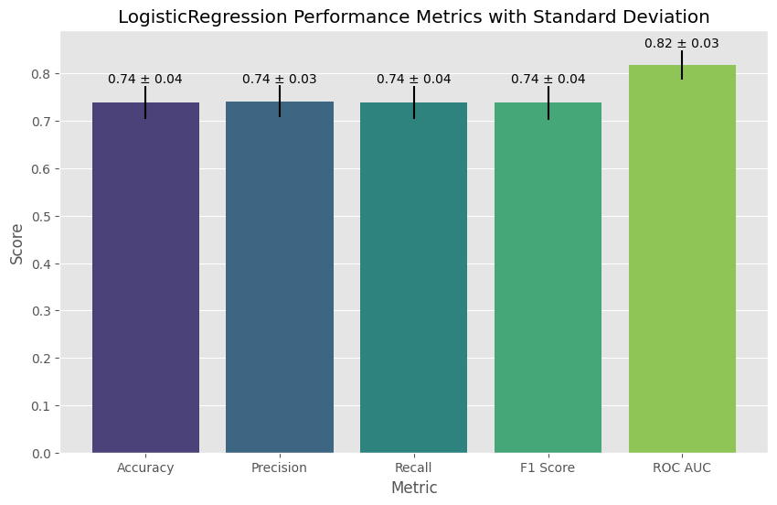
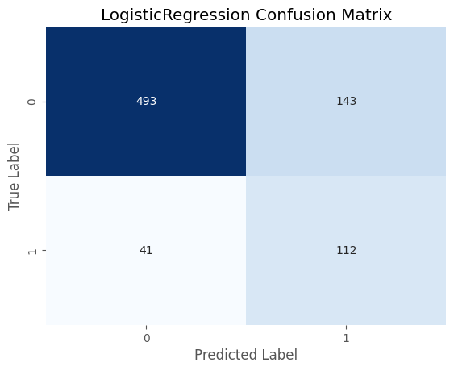
base_metrics_df| Accuracy | Precision | Recall | F1 Score | ROC AUC | |
|---|---|---|---|---|---|
| 0 | 0.752101 | 0.752119 | 0.752101 | 0.752096 | 0.816680 |
| 1 | 0.781513 | 0.783515 | 0.781513 | 0.781126 | 0.850505 |
| 2 | 0.684874 | 0.689710 | 0.684874 | 0.682853 | 0.768025 |
| 3 | 0.734177 | 0.735451 | 0.734177 | 0.733751 | 0.824954 |
| 4 | 0.742616 | 0.745454 | 0.742616 | 0.741779 | 0.832574 |
Further Model Candidates
Logistic Regression
all_vars_prep_pipeline, all_vars_column_selection = build_preprocessor_pipeline(X_train, include_columns=X_train.columns.tolist())
lr_pipeline = Pipeline([
('preprocessor', all_vars_prep_pipeline),
('classifier', LogisticRegression(random_state=1337, max_iter=100_000, solver='saga'))
])
param_grid = {
'classifier__C': [0.01, 0.1, 1, 10, 100],
'classifier__penalty': ['l1', 'l2'],
}
(lr_estimator,
lr_params,
lr_metrics_df,
lr_roc_curves,
lr_pr_curves,
lr_ift_probs,
lr_true_labels) = cross_validate(lr_pipeline, all_vars_column_selection, y_train, param_grid=param_grid)
model_name = lr_estimator.named_steps['classifier'].__class__.__name__
plot_metrics(lr_metrics_df, model_name)
plot_confusion_matrix(lr_estimator, X_test[all_vars_column_selection.columns], y_test, model_name)Cross-Validation: 100%|██████████| 5/5 [00:08<00:00, 1.75s/it]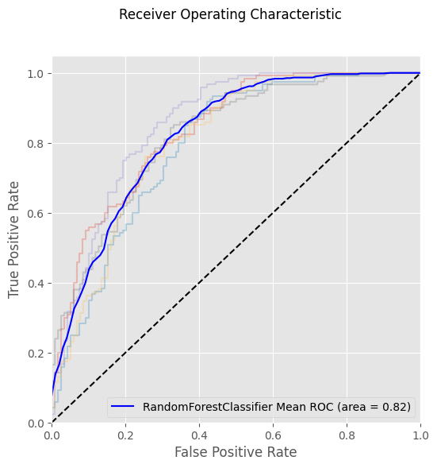
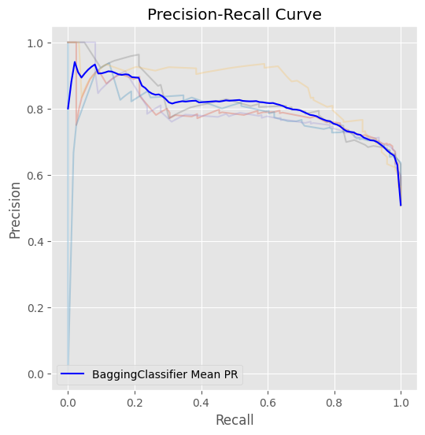
Decision Tree
from sklearn.tree import DecisionTreeClassifier
dt_pipeline = Pipeline([
('preprocessor', all_vars_prep_pipeline),
('classifier', DecisionTreeClassifier(random_state=1337))
])
param_grid = {
'classifier__max_depth': [5, 10, 20, 30, 50],
'classifier__min_samples_split': [2, 5, 10],
'classifier__min_samples_leaf': [1, 2, 4]
}
(dt_estimator,
dt_params,
dt_metrics_df,
dt_roc_curves,
dt_pr_curves,
dt_lift_probs,
dt_true_labels) = cross_validate(pipeline=dt_pipeline,
X=all_vars_column_selection,
y=y_train,
param_grid=param_grid)
model_name = dt_estimator.named_steps['classifier'].__class__.__name__
plot_metrics(dt_metrics_df, model_name)
plot_confusion_matrix(dt_estimator, X_test[all_vars_column_selection.columns], y_test, model_name)Cross-Validation: 100%|██████████| 5/5 [00:00<00:00, 7.68it/s]
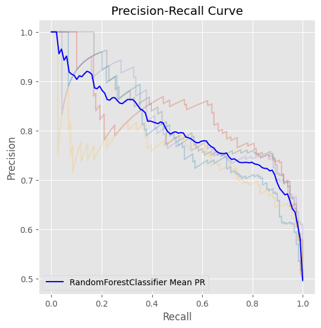
Random Forest
from sklearn.ensemble import RandomForestClassifier
all_vars_prep_pipeline, all_vars_column_selection = build_preprocessor_pipeline(X_train, include_columns=X_train.columns.tolist())
rf_pipeline = Pipeline([
('preprocessor', all_vars_prep_pipeline),
('classifier', RandomForestClassifier(random_state=1337))
])
param_grid = {
'classifier__max_depth': [5, 10, 20, 30, 50],
'classifier__n_estimators': [10, 20, 30]
}
(rf_estimator,
rf_params,
rf_metrics_df,
rf_roc_curves,
rf_pr_curves,
rf_lift_probs,
rf_true_labels) = cross_validate(rf_pipeline,
X_train[all_vars_column_selection.columns],
y_train,
param_grid=param_grid)
model_name = rf_estimator.named_steps['classifier'].__class__.__name__
plot_metrics(rf_metrics_df, model_name)
plot_confusion_matrix(rf_estimator, X_test[all_vars_column_selection.columns], y_test, model_name)Cross-Validation: 100%|██████████| 5/5 [00:00<00:00, 5.13it/s]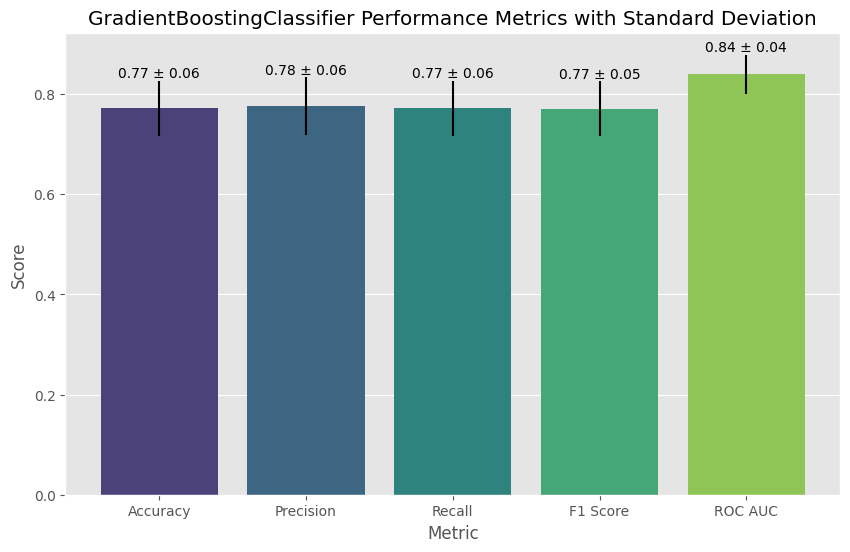
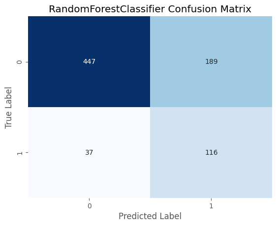
Bagging
from sklearn.ensemble import BaggingClassifier
bg_pipeline = Pipeline([
('preprocessor', all_vars_prep_pipeline),
('classifier', BaggingClassifier(random_state=1337))
])
param_grid = {
'classifier__n_estimators': [10, 20, 30],
'classifier__max_features': [10, 20, 30, 40, 50]
}
(bg_estimator,
bg_params,
bg_metrics_df,
bg_roc_curves,
bg_pr_curves,
bg_lift_probs,
bg_true_labels) = cross_validate(bg_pipeline,
all_vars_column_selection,
y_train,
param_grid=param_grid)
model_name = bg_estimator.named_steps['classifier'].__class__.__name__
plot_metrics(bg_metrics_df, model_name)Cross-Validation: 100%|██████████| 5/5 [00:00<00:00, 5.73it/s]Boosting
from sklearn.ensemble import GradientBoostingClassifier
bt_pipeline = Pipeline([
('preprocessor', all_vars_prep_pipeline),
('classifier', GradientBoostingClassifier(random_state=1337))
])
param_grid = {
'classifier__n_estimators': [10, 20, 30],
'classifier__learning_rate': [0.01, 0.1, 1],
'classifier__max_depth': [5, 10, 20]
}
(bt_estimator,
bt_params,
bt_metrics_df,
bt_roc_curves,
bt_pr_curves,
bt_lift_probs,
bt_true_labels) = cross_validate(bt_pipeline,
all_vars_column_selection,
y_train,
param_grid=param_grid)
model_name = bt_estimator.named_steps['classifier'].__class__.__name__
plot_metrics(bt_metrics_df, model_name)Cross-Validation: 100%|██████████| 5/5 [00:08<00:00, 1.79s/it]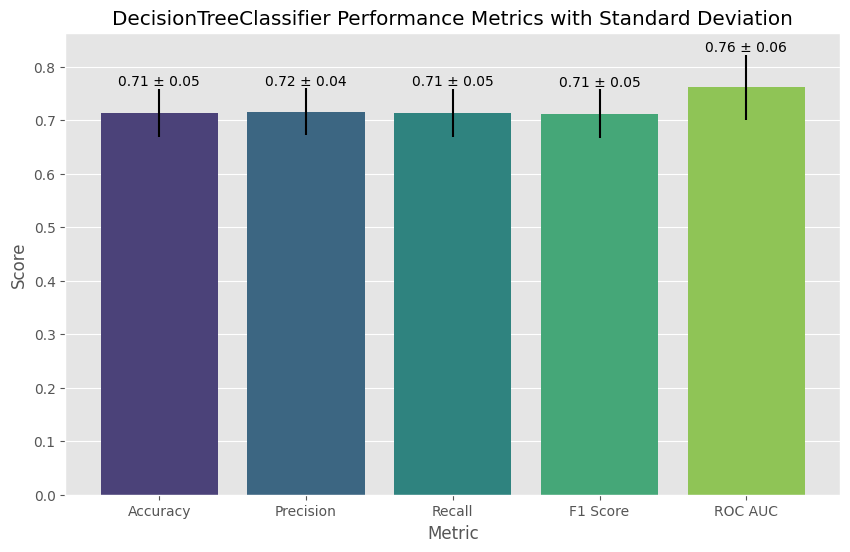
Comparing the Model Candidates
ROC Curves
from src.plot_utils import plot_multiple_roc_curves
plot_multiple_roc_curves([base_roc_curves, lr_roc_curves, dt_roc_curves, rf_roc_curves, bg_roc_curves, bt_roc_curves],
['Baseline Logistic Regression', 'Logistic Regression', 'Decision Tree', 'Random Forest', 'Bagging Classifier', 'Boosting Classifier'])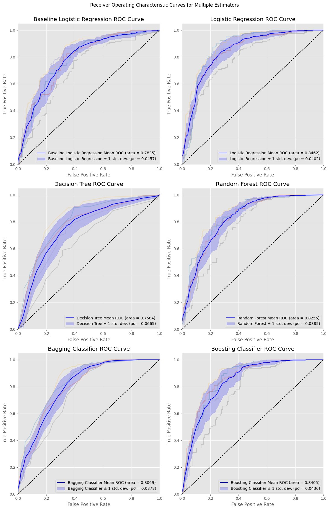
from src.plot_utils import plot_auc_boxplots
plot_auc_boxplots([base_roc_curves, lr_roc_curves, dt_roc_curves, rf_roc_curves, bg_roc_curves, bt_roc_curves],
['Baseline Logistic Regression', 'Logistic Regression', 'Decision Tree', 'Random Forest', 'Bagging Classifier', 'Boosting Classifier'])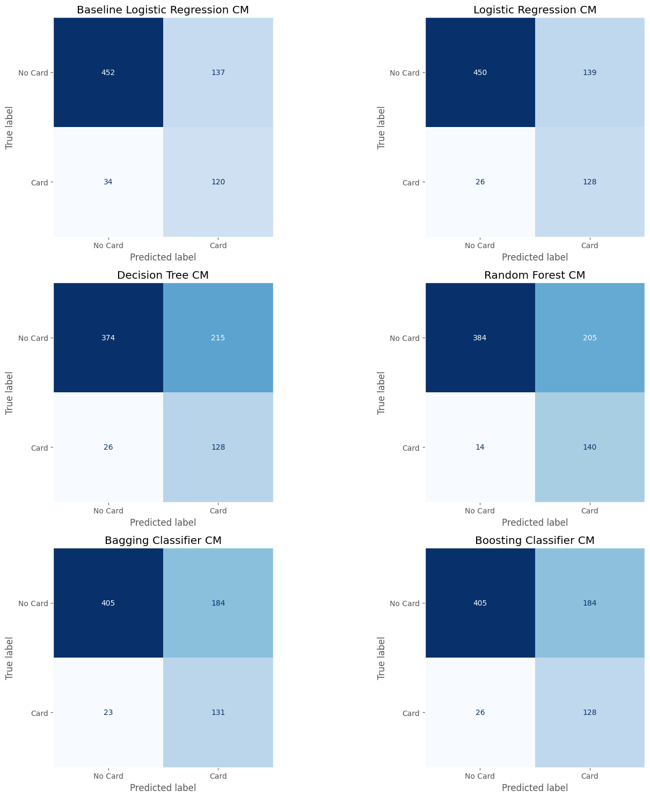
Confusion Matrices
from src.plot_utils import plot_confusion_matrices
plot_confusion_matrices([base_estimator, lr_estimator, dt_estimator, rf_estimator, bg_estimator, bt_estimator],
X_test[all_vars_column_selection.columns],
y_test,
['Baseline Logistic Regression', 'Logistic Regression', 'Decision Tree', 'Random Forest', 'Bagging Classifier', 'Boosting Classifier'])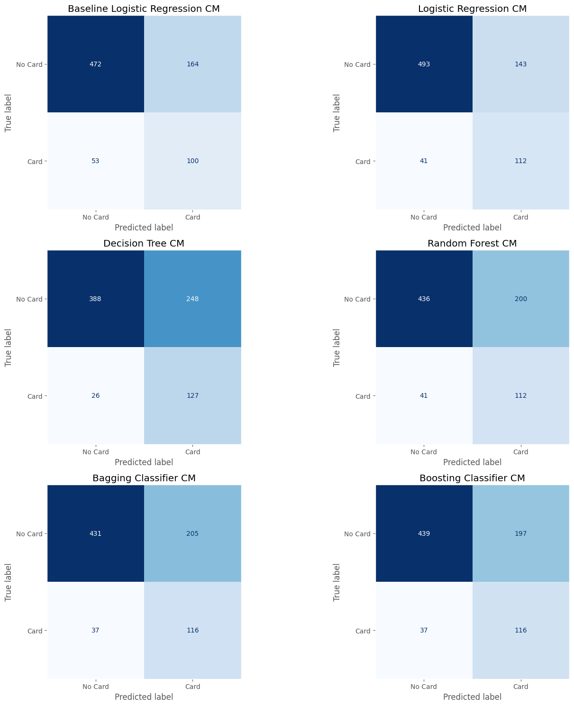
Other Metrics
average_metrics = []
for name, df in zip(['Baseline Logistic Regression', 'Logistic Regression', 'Decision Tree', 'Random Forest', 'Bagging Classifier', 'Boosting Classifier'],
[base_metrics_df, lr_metrics_df, dt_metrics_df, rf_metrics_df, bg_metrics_df, bt_metrics_df]):
mean_metrics = df.mean()
mean_metrics['Estimator'] = name
average_metrics.append(mean_metrics)
average_metrics_df = pd.DataFrame(average_metrics)[['Estimator', 'Accuracy', 'Precision', 'Recall', 'F1 Score', 'ROC AUC']]
average_metrics_df| Estimator | Accuracy | Precision | Recall | F1 Score | ROC AUC | |
|---|---|---|---|---|---|---|
| 0 | Baseline Logistic Regression | 0.739056 | 0.741250 | 0.739056 | 0.738321 | 0.818547 |
| 1 | Logistic Regression | 0.774396 | 0.775729 | 0.774396 | 0.774123 | 0.852310 |
| 2 | Decision Tree | 0.728951 | 0.739698 | 0.728951 | 0.726493 | 0.772752 |
| 3 | Random Forest | 0.767667 | 0.773304 | 0.767667 | 0.766481 | 0.832349 |
| 4 | Bagging Classifier | 0.756728 | 0.760842 | 0.756728 | 0.755801 | 0.823593 |
| 5 | Boosting Classifier | 0.771865 | 0.776754 | 0.771865 | 0.771009 | 0.839721 |
Model Reduction
Selecting Features
lr_rfe_pipeline = Pipeline([
('preprocessor', all_vars_prep_pipeline),
('classifier', LogisticRegression(**lr_estimator.named_steps['classifier'].get_params()))
])
(lr_rfe_estimator,
lr_rfe_params,
lr_rfe_metrics_df,
lr_rfe_roc_curves,
lr_rfe_pr_curves,
lr_rfe_ift_probs,
lr_rfe_true_labels) = cross_validate(lr_rfe_pipeline, all_vars_column_selection, y_train, n_features_to_select=20)Cross-Validation: 100%|██████████| 5/5 [04:16<00:00, 51.25s/it]rfe_step = lr_rfe_estimator.named_steps['rfe']
rfe_selected_columns = X_train.iloc[:,rfe_step.get_support(indices=True)].columns
pd.DataFrame(rfe_selected_columns, columns=['Selected Features'])| Selected Features | |
|---|---|
| 0 | client_age |
| 1 | ordertype_INSURANCE PAYMENT |
| 2 | client_district_region |
| 3 | client_district_n_municipalities_with_inhabita... |
| 4 | account_district_n_cities |
| 5 | withdrawal_month_diff_6 |
| 6 | credit_month_diff_9 |
| 7 | balance_month_diff_4 |
| 8 | account_age |
| 9 | pre_card_volume_mean |
| 10 | pre_card_credit_min |
| 11 | pre_card_credit_median |
| 12 | pre_card_withdrawal_mean |
| 13 | pre_card_withdrawal_max |
| 14 | pre_card_n_transactions_mean |
| 15 | pre_card_balance_max |
| 16 | pre_card_balance_sum |
| 17 | balance_month_max |
| 18 | balance_first_quarter_max |
| 19 | withdrawal_first_quarter_max |
Model Explanation
from dalex import Explainer
prep_transform = lr_rfe_estimator.named_steps['preprocessor'].transform(X_train[all_vars_column_selection.columns])
rfe_transform = lr_rfe_estimator.named_steps['rfe'].transform(prep_transform)
rfe_transform_df = pd.DataFrame(rfe_transform, columns=rfe_selected_columns)
rfe_transform_df
explainer = Explainer(lr_rfe_estimator.named_steps['classifier'], rfe_transform_df, y_train, label='Reduced Logistic Regression')Preparation of a new explainer is initiated
-> data : 1188 rows 20 cols
-> target variable : Parameter 'y' was a pandas.Series. Converted to a numpy.ndarray.
-> target variable : 1188 values
-> model_class : sklearn.linear_model._logistic.LogisticRegression (default)
-> label : Reduced Logistic Regression
-> predict function : <function yhat_proba_default at 0x290df0180> will be used (default)
-> predict function : Accepts pandas.DataFrame and numpy.ndarray.
-> predicted values : min = 0.0523, mean = 0.501, max = 0.999
-> model type : classification will be used (default)
-> residual function : difference between y and yhat (default)
-> residuals : min = -0.994, mean = -0.00142, max = 0.928
-> model_info : package sklearn
A new explainer has been created!explainer.model_performance()| recall | precision | f1 | accuracy | auc | |
|---|---|---|---|---|---|
| Reduced Logistic Regression | 0.779461 | 0.805217 | 0.79213 | 0.795455 | 0.870008 |
explainer.model_parts(type='variable_importance').plot()Unable to display output for mime type(s): application/vnd.plotly.v1+json# plot partial dependence plot
pd_rf = explainer.model_profile()
pd_rf.plot()Calculating ceteris paribus: 100%|██████████| 20/20 [00:00<00:00, 82.75it/s]Unable to display output for mime type(s): application/vnd.plotly.v1+jsonTop Customer Lists
from src.plot_utils import plot_model_concordance
estimators = [base_estimator, lr_estimator, dt_estimator, rf_estimator, bg_estimator]
estimator_names = ['Baseline Logistic Regression', 'Logistic Regression', 'Decision Tree', 'Random Forest', 'Bagging Classifier']
non_card_holders = cleaned_client_df[cleaned_client_df['has_card'] == False].drop(columns='has_card')
plot_model_concordance(estimators, estimator_names, non_card_holders, p=0.05)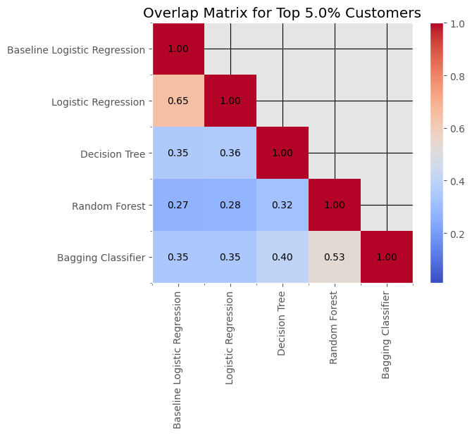
plot_model_concordance(estimators, estimator_names, non_card_holders, p=0.1)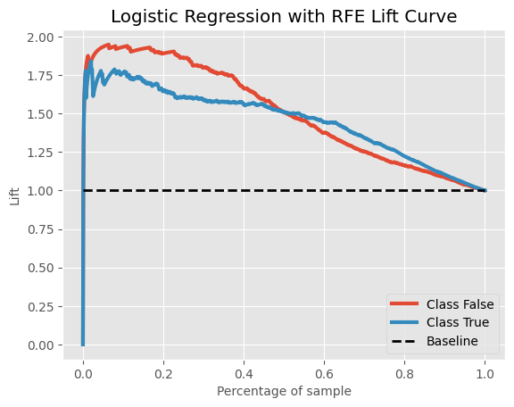